扉页
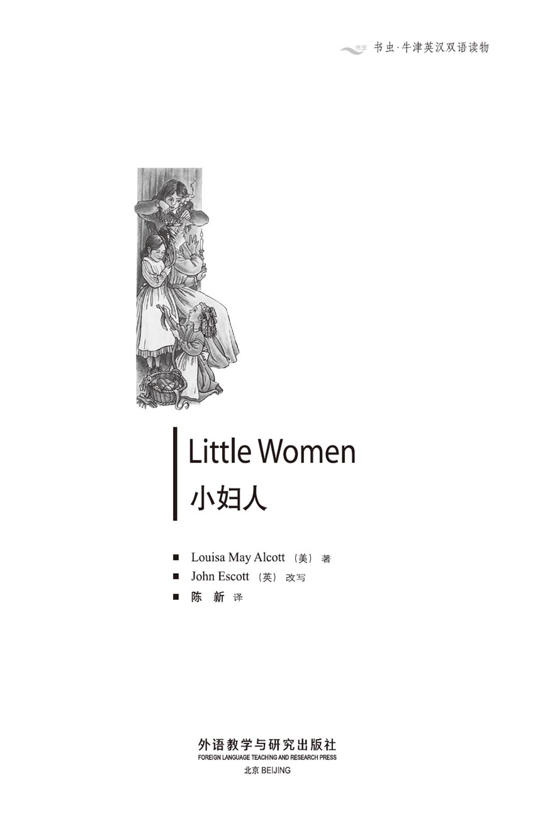
版权页
京权图字 01-96-1580
Originally published by Oxford University Press, Great Clarendon Street, Oxford. © 1995
This edition is licensed for sale in the People's Republic of China only and not for export therefrom.
'Oxford' is a registered trademark of Oxford University Press.
只限中华人民共和国境内销售，不包括香港特别行政区、澳门特别行政区及台湾省。不得出口。
图书在版编目（CIP）数据
小妇人 = Little Women／（美）阿尔考特（Alcott, L.）著；（英）埃斯科特（Escott, J.）改写；陈新译．—北京：外语教学与研究出版社，1996.12（2015.4 重印）
（书虫·牛津英汉双语读物）
ISBN 978-7-5600-1181-3
Ⅰ．小… Ⅱ．①阿…②埃…③陈… Ⅲ．小说—对照读物—英、汉 Ⅳ．H319.4：I
中国版本图书馆CIP数据核字（96）第25590号
出版人： 蔡剑峰
责任编辑：余 军
出版发行：外语教学与研究出版社
社 址：北京市西三环北路19号（100089）
网 址：http://www.fltrp.com
版 次：1997年1月第1版
书 号：ISBN 978-7-5600-1181-3
凡侵权、盗版书籍线索，请联系我社法律事务部
举报电话：（010）88817519
电子邮箱：banquan@fltrp.com
法律顾问：立方律师事务所 刘旭东律师
中咨律师事务所 殷 斌律师
简介
简 介
圣诞节之际，马奇家的四个女孩子都决心努力做个好女孩，不再滥发脾气，不再懒惰，不再自私。麦格是最年长的一个，她决心不再抱怨工作不好以及没有漂亮的衣服穿。琼决心不再与人争辩和生气，不再像个男孩一样四处乱跑。羞涩的白丝会努力变得勇敢些，小艾米会少顾及自己而多替他人着想。
当然，她们并不总是成功，有时她们会有争吵、小秘密以及愤怒的眼泪；但是，也有欢笑和有趣的事情。不久她们有了一个新朋友——邻居富有且孤独的男孩罗瑞。
即将到来的一年里有许多的麻烦和困难，而女孩子们在成长，无拘无束的琼憎恨成为彬彬有礼的年轻淑女，可麦格将满17岁，她就要恋爱了……
路易莎·梅·阿尔考特于1832年生于美国的宾夕法尼亚州，1888年去世。她家境贫寒，生活艰辛，直到后来她的著名作品《小妇人》成功问世。这本书源于她自己的家庭生活以及阿尔考特家四姐妹的经历。之后她又撰写了三部关于马奇家的作品，分别为《好妻子》、《小男人》和《琼的男友们》。
目录
1．Four sisters
1
Four sisters
'Christmas won't be Christmas without any presents,' said Jo crossly.
'It's so awful to be poor!' agreed Meg, looking at her old dress.
'It's not right for some girls to have pretty things, and others to have nothing at all,' said little Amy.
'We've got Father and Mother, and each other,' said Beth gently.
The four young faces round the fire cheered up as they thought of this, but then Jo said sadly, 'We haven't got Father, and we won't have him for a long time. ' She didn't say 'perhaps never', but each silently thought it, remembering that he was away at the war in the South.
Then Meg said, 'Mother says we shouldn't spend money on presents when our men are fighting a war.'
'We can't expect anything from Mother or each other,' said Jo, 'but we only have a dollar each, and that won't help the army much. Let's each buy ourselves what we want, and have a little fun. We work hard to earn it.'
'I do, teaching those awful children,' said Meg.
'What about me?' said Jo. 'I'm shut up all day working for a terrible old lady, who gives me different orders every five seconds!'
'I think washing cups and plates and keeping things tidy is the worst work in the world,' said Beth. 'My hands get too tired to play my music.'
'I have to go to school with girls who laugh at my dresses and say cruel things because my father isn't rich,' said Amy.
'I wish we had the money Father lost when we were little, Jo,' said Meg.
'I wish I was a boy,' said Jo. 'Then I could go and fight beside Father!'
Meg was sixteen and very pretty, with large eyes and soft brown hair, and white hands. Fifteen-year-old Jo was very tall and thin. Her long, dark-red hair was usually pushed up out of the way. Beth was thirteen, a very shy girl who seemed to live in a happy world of her own. Amy was the youngest, but thought herself to be the most important. She had blue eyes, and yellow hair which curled on to her shoulders.
At six o' clock, Beth put a pair of slippers by the fire to warm and Meg lit the lamp. Amy got out of the comfortable chair without being asked, and Jo forgot how tired she was and held the slippers closer to the fire.
'These are old,' she said. 'Mother needs a new pair.'
'I'll get her some with my dollar,' said Beth.
'No, I shall!' cried Amy.
'I'm the oldest—' began Meg.
'I'm the man of the family now Father is away, and I shall buy them,' said Jo.
'Let's each get her something and not get anything for ourselves,' said Beth.
'That's a kind idea!' said Jo. 'What shall we get?'
Everyone thought for a moment, then Meg said, 'I'll give her a nice pair of gloves.'
'The best army slippers,' said Jo.
'Some handkerchiefs,' said Beth.
'A little bottle of perfume,' said Amy. 'It won't cost much, so I'll have some money left to buy something for me.'
'We'll let Mother think we're getting things for ourselves, and then surprise her,' said Jo.
Mrs March arrived home soon after. She took off her wet things and put on her warm slippers. Meg made the tea, Jo brought wood for the fire, Beth was quiet and busy, and Amy gave orders.
'I've got a letter from Father!' cried Mrs March.
It was a letter to cheer them up, and the special message for the girls came at the end: Give them all my love and a kiss. I think of them every day. I know they will be loving children to you, and that when I come back, I will be prouder than ever of my little women.
A tear dropped off the end of Jo's nose.
Amy hid her face on her mother's shoulder. 'I'm selfish,' she cried, 'but I'll try to be better.'
'We all will!' cried Meg. 'I think too much about the way I look, and hate to work, but I won't anymore.'
'And I'll try to be a "little woman",' said Jo, 'and not be rough and wild.'
Beth said nothing, but she began to work hard at a blue army glove she was making.
So the four girls decided that they would all try very hard to be good. They would never be cross, or lazy, or selfish—and they would all help each other. They talked over their plan that evening, while they made sheets for Aunt March. Then at nine o'clock they stopped to sing a song. Beth played the old piano, and Meg and her mother led the singing. Jo always sang in the wrong place, but the girls never got too old to sing together.
present n. gift. 礼物。
awful adj. terrible. 可怕的。
cheer up become happy. 高兴起来。
silently adv. making no or little sound. 默默地。
tidy adj. arranged neatly and in order. 整洁的。
cruel adj. taking pleasure in the suffering of others. 残忍的。
comfortable adj. giving comfort to the body. 舒适的。
kind adj. having sympathy or love for others. 亲切的；仁慈的。
handkerchief n. 手帕。
perfume n. 香水。
take off remove. 脱掉。
rough adj. in a rough manner. 粗鲁的。
wild adj. savage. 野蛮的。
cross adj. bad-tempered. 脾气坏的。
selfish adj. without care for other. 自私自利的。
四姐妹
1 四姐妹
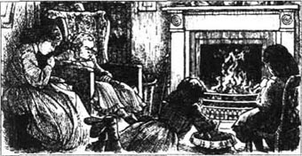
“如果没有礼物，圣诞节就徒有其名。”琼生气地说。
“贫穷真是糟糕透了！”麦格边看着她的旧衣裙边表示赞同，
“有些女孩子有漂亮的东西，而其他女孩却什么都没有，这是不公平的。”小艾米说。
“我们有爸爸和妈妈，还拥有彼此。”白丝温文尔雅地说道。
想起这些，围在火炉边的四张年轻的面孔变得快乐起来，可然后琼悲伤地说：“我们没有爸爸，我们要有很长时间都不会有他。”她并没有说出“也许永远也不会有了”这句话，但想起父亲去南方打仗了，每个人都默默地想到了它。
然后麦格说道：“妈妈说过，当我们的男人在打仗的时候我们不应该把钱花在买礼物上。”
“我们不能期待会从妈妈或彼此那里得到任何礼物，”琼说，“可我们每个人都只有一块钱，这帮不了军队什么忙。咱们每人给自己买些想要的东西高兴高兴吧。这是咱们努力工作挣来的。”
“是我挣的，是我教那些糟糕的孩子挣来的。”麦格道。
“我又怎么样？”琼说，“我一整天一句话都不说，给一个可怕的老太婆干活，她每五秒钟就给我下一道不同的命令！”
“我觉得洗杯子、盘子和整理东西是世界上最坏的工作，”白丝说，“我的双手累得都弹不了琴了。”
“我不得不跟那些笑话我穿戴的女孩子们一起去上学，她们常说些难听的话，因为我的父亲不是有钱人。”艾米说。
“真希望我们能有在我们小时候爸爸失掉的那些钱呀，琼。”麦格道。
“我希望我是个男孩，”琼说，“那样我就可以去和爸爸并肩作战了。”
麦格16岁了，长得很漂亮，大眼睛，拥有柔软的棕色头发，以及白皙的双手。15岁的琼又高又瘦。她常把深红色的长发梳得老高。白丝13岁，她是个很怕羞的女孩，看起来像是生活在她自己的快乐世界里。艾米最小，可她认为自己最重要。她有一双蓝色的眼睛，还有卷到肩头的黄色头发。
6点钟，白丝把一双拖鞋放到火边烘烤，麦格点亮了灯。并没有人说什么，艾米就从那张舒服的椅子上爬起来，琼已忘记了她的疲惫。她将拖鞋放到离火近的地方。
“这太旧了，”她说，“妈妈需要一双新拖鞋”。
“我要用我的钱给她买。”白丝道。
“不，我来买！”艾米大喊。
“我最大——”麦格开口了。
“现在爸爸不在，我就是家里的男人，我来买拖鞋。”琼说。
“咱们每人都给她买些东西吧，什么都不要给自己买了。”白丝建议道。
“那是个好主意！”琼说，“那我们买什么呢？”
每个人都思索了片刻，然后麦格说：“我要给她买一副很好的手套。”
“我要买最好的军用拖鞋。”琼说。
“我想买一些手帕。”白丝说。
“我会买一小瓶香水，”艾米道，“那不会很贵，所以我还会剩点钱给自己买些东西。”
“咱们让妈妈觉得咱们在给自己买东西，然后让她大吃一惊。”琼说。
马奇太太不久就回家了。她把湿衣服脱掉，换上暖和的拖鞋。麦格泡了茶，琼给火炉拿来了木柴，白丝一声不响地忙碌着，艾米在发号施令。
“我拿到了爸爸的来信！”马奇太太喊道。
那是一封叫大家高兴起来的信，信尾是特别写给女孩子们的：“替我向她们转达我的爱和吻。我每天都在想念她们，我知道她们会成为你的好孩子。我知道等我回家时，我会比以往任何时候都更为我的小妇人们感到骄傲。”
一滴泪珠从琼的鼻尖上滑落。
艾米将脸藏在母亲的臂弯里。“我很自私自利，”她哭泣着说，“可我会努力变得好些。”
“我们都会的，”麦格流着泪道。“我太注重自己的外表，憎恨工作，但我以后不会了。”
“我会尽力做个‘小妇人’，”琼说，“不再粗野无礼了。”
白丝什么也没说，但她开始卖力地做一副蓝色的军用手套。
于是四个女孩都决心要尽力地做个好女孩，不再滥发脾气，不再懒隋，不再自私，她们将互相帮助。那天晚上，她们在给马奇姨妈做被单时讨论了她们的计划。9点钟的时候，她们停下来一起唱了一支歌。白丝弹着那架老钢琴，麦格和母亲一道领唱。琼总是唱得不对，可女孩子永远不会因为太大了而不能一起唱歌。
2．A Happy Christmas
2
A Happy Christmas
Jo was the first to wake up on Christmas morning, but soon they were all awake and they went downstairs.
'Where's Mother?' asked Meg.
'I don't know,' said old Hannah. She had lived with the family since Meg was born, and was more like a friend than a servant. 'Some poor woman came to the door and your mother went off to see what was needed.'
'She'll be back soon,' said Meg. She looked at the presents for her mother which were in a basket under a chair, ready to bring out at the right time. 'Where is Amy's bottle of perfume?'
'She went to put some pretty paper round it, I think,' said Jo.
Suddenly, they heard the outside door close.
'Here's Mother! Hide the basket, quick!' said Jo.
But it was Amy. She came in quickly.
'Where have you been, and what' s that behind you?' asked Meg.
'I ran to the shop and changed the little bottle of perfume for a big one,' said Amy. 'I spent all my money to get it, and I'm not going to be selfish anymore!'
Meg smiled proudly and put her arms around her sister. Then there was another bang from the outside door, and the basket was pushed back under the chair. The girls ran to the table, ready for their breakfast.
'Happy Christmas, Mother!' they shouted.
'Happy Christmas, little daughters!' said Mrs March.
Then the smile disappeared from her face. 'Girls, listen. Not far away is a poor woman, Mrs Hummel, with a new baby. Her six children are in one bed, trying to keep warm, as they have no wood for a fire. There is nothing to eat and they are hungry and cold. Will you give them your breakfast as a Christmas present?'
For a minute no one spoke. Then Jo said, 'Mother, I'm so glad you came back before we began to eat!' And the girls quickly began to put their breakfast in a basket.
'I knew you would do it,' said Mrs March, smiling.
She took the girls and Hannah to a cold, miserable little room in an old building, where they found a sick mother, a crying baby, and a group of children with white, frightened faces. The children were on the bed under a blanket, trying to keep warm.
The woman almost cried with happiness when she saw the girls. Hannah, who had brought wood, made a fire. Mrs March gave the mother tea and hot food, then she dressed the little baby gently. The girls put the children round the fire and fed them like hungry birds.
It was a very happy meal, although the girls ate none of it. But no one was happier than those hungry young ladies who gave away their breakfast on Christmas morning.
Mrs March was surprised and pleased when she saw her presents later. There was a lot of laughing and kissing and explaining. Then, for the rest of the day, the girls were busy. Jo liked to write plays, and the four of them were going to act one that evening. They had learned their words, and had worked hard to make strange and wonderful clothes for all the different characters in the play.
On Christmas night, some other girls came to watch. At first, there was a lot of whispering and laughing from the four sisters behind the curtains. Then the curtains were opened and the play began.
It was an exciting story about Hugo (acted by Jo wearing a black beard!), beautiful Zara and brave Roderigo. There were also two ghosts, a cruel king, and a tall castle made of paper and wood—which unfortunately fell down just as Roderigo and Zara were escaping from it. There were screams of laughter from everyone, but the actors picked themselves up and carried on through more dangers and mysteries until the happy ending was reached.
All the visitors loved the play, and after the excitement and fun came a surprise for everyone.
'Would the young ladies like to stay for supper?' asked Hannah.
And when the girls saw the supper table, they could not believe their eyes! There were ice-cream, cake, fruit, and chocolate! And in the middle of the table were flowers for each of the four actors.
'Where did it all come from?' asked Amy.
'From Father Christmas, perhaps?' said Beth.
'Mother did it,' said Meg.
'Aunt March sent it,' said Jo.
'You're all wrong,' laughed Mrs March. 'Old Mr Laurence sent it!'
'The Laurence boy's grandfather?' said Meg. 'But we don't know him.'
'Hannah told his servant about your breakfast party, and that pleased him,' said Mrs March. 'He knew my father many years ago, and he sent me a note this afternoon, asking if he could send my children a few small Christmas presents.'
'The idea came from that boy, I know it did!' said Jo. 'I'm sure he wants to know us, but he's shy, and Meg won't let me speak to him when we pass him in the street. She says that it's not at all polite for young ladies to introduce themselves to strangers.'
'You mean the people who live in the big house next door, don't you?' said one of the other girls. 'My mother knows old Mr Laurence. She says he keeps his grandson in the house when the boy isn't riding or walking with his tutor, and makes him study very hard. We invited the boy to our party but he didn't come.'
'That boy needs to have some fun,' said Jo.
wake up stop sleeping. 醒来。
servant n. person who works in a household for wages, food and lodging. 仆人。
suddenly adv. happening unexpectedly. 突然。
disappear v. go out of sight. 消失。
far away distant. 遥远的。
miserable adj. very unhappy. 不幸的；悲惨的。
frightened adj. afraid. 害怕的。
give away give freely. 赠送。
explain v. make plain or clear. 解释。
strange adj. not previously known, seen, felt or heard of. 奇怪的。
mystery n. 神秘的事物。
party n. gathering of persons, by invitation, for pleasure. 聚会。
polite adj. 有礼貌的。
introduce v. make known by name. 介绍相识。
tutor n. private teacher. 家庭教师。
快乐的圣诞节
2 快乐的圣诞节
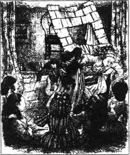
圣诞节清晨，琼是第一个醒来的，可随后她们就都醒了，然后下了楼。
“妈妈在哪儿？”麦格问。
“我不知道，”老海娜答道。她从麦格一出世就和全家住在一起，就像是一个朋友，而不像仆人。“有个可怜的女人来到门口，你们的母亲随她去了，好看看她需要什么。”
“她很快就会回来的，”麦格说。她看了看那些给母亲的礼物，它们被装在一个篮子里，放在椅子下面，准备在恰当的时候拿出来。“艾米的那瓶香水呢？”
“我想她是想拿去包上些漂亮的纸。”琼答道。
突然，她们听到外面的门被关上了。
“妈妈来了，把篮子藏起来，快！”琼说。
但那是艾米。她匆匆走进屋。
“你到哪儿去了，藏在你身后的是什么？”麦格问。
“我跑到商店去了，把那一小瓶香水换成了一大瓶，”艾米说，“我花掉了所有的钱，我再也不自私了！”
麦格骄傲地笑了，伸出双臂拥抱她的妹妹。然后外面的门又“砰”地响了一声，篮子被推到了椅子下面。女孩子们跑到桌边坐定，准备吃早餐。
“圣诞快乐，妈妈！”她们喊道。
“圣诞快乐，小女儿们！”马奇太太应道。
随后笑容从她脸上消失了。“孩子们，听着，不远处有个穷妇人，哈梅尔太太，她有个刚降生的婴儿。她的六个孩子挤在一张床上取暖，因为他们没有木柴生火。他们没有吃的，又饿又冷。你们把你们的早餐送给他们做圣诞礼物怎么样？”
大家沉默了一会儿。然后琼说：“妈妈，我很高兴你在我们开始吃饭之前回来！”孩子们很快开始将她们的早餐放到一个篮子里。
“我知道你们会这样做的。”马奇太太微笑着说。
她把孩子们和海娜带到位于一座旧楼里的一间又冷又破的小屋里。在那里她们见到了一位生病的母亲，一个正在啼哭的婴儿和一群面容苍白、满脸恐惧的孩子。那些孩子挤在床上的一张毛毯里，试图以此取暖。
那妇人见到女孩子们后高兴得几乎哭出来。海娜带来了木柴，燃起了炉火。马奇太太把茶和热气腾腾的食物交给了那位母亲，并轻柔地给婴儿穿衣服。女孩子们则把其他孩子抱到炉火旁边，然后像喂饥饿的小鸟一样喂给他们东西吃。
那顿饭吃得很高兴，虽然女孩子们并没有吃到东西。可没有任何人能比这些在圣诞节早晨饿着肚子将早餐送给别人的女孩子更高兴了。
马奇太太随后看到她的礼物时又惊又喜。此后是一阵大笑、亲吻和解释。然后，那天剩下的时光里女孩子们都忙忙碌碌的。琼喜欢写剧本，那天晚上她们四个就要演其中一个剧。她们已经记住了台词，还费力地为剧中的不同人物做了怪异和精彩的服装。
圣诞节晚上，其他一些女孩子都来看表演。一开始，幕后传出了四姐妹的许多低语和笑声，然后，幕帘开启，演出开始。
那是一个关于雨果、美丽的扎拉和勇敢的罗德里歌的激动人心的故事（雨果由琼扮演，她戴着一撮黑胡子！）。还有两个鬼魂、一个残暴的国王以及一个由纸和木头做成的高大的城堡。不幸的是，当罗德里歌和扎拉从城堡中出逃时，城堡塌了下来。所有人都尖声大笑，可演员们爬起来，又历经许多的风险和神秘，最终获得了幸福的结局。
每个来访者都十分喜欢那出剧。这件令人激动、妙趣横生的事件过后，发生了一件令每个人都吃惊的事。
“你们这些年轻小姐都留下来吃晚饭好吗？”海娜问道。
当女孩子们看见餐桌的时候，她们简直不敢相信自己的眼睛！冰淇淋、蛋糕、水果和巧克力！在桌子正中还摆着给四位演员每人一束的鲜花！
“这些都是哪来的？”艾米问。
“可能是圣诞老人送来的。”白丝说。
“妈妈做的。”麦格说。
“马奇姑妈送来的。”琼说。
“你们都错了，”马奇太太笑着说，“是老劳伦斯先生送来的！”
“是那个劳伦斯家的小男孩的祖父？”麦格问，“可我们不认识他呀。”
“海娜给他的仆人讲了你们的早餐聚会，那让他感到很高兴，”马奇太太说，“很多年前他就认识我父亲。今天下午他送来张纸条，问他可否给我的孩子送些圣诞礼物。”
“这一定是那个男孩的主意，我知道，”琼说，“他一定是想认识我们，可他很怕羞。我们在街上碰到他时麦格不让我跟他讲话。她说女孩子主动跟陌生人搭讪太没礼貌。”
“你是说住在隔壁大房子里的人，对吧？”其他女孩子中的一个问，“我妈妈认识老劳伦斯先生。她说除了骑马和跟家庭教师散步，他总让孙子呆在屋里，让他用功学习。我们曾邀请那男孩参加我们的聚会，可他没来。”
“那个男孩需要些乐趣。”琼说。
3．The Laurence boy
3
The Laurence boy
'Look!' said Meg, excitedly, a day or two later. She waved a piece of paper at Jo. 'An invitation to a New Year's party at Sallie Gardiner's house, and it's for both of us. Mother says we can go, but what shall we wear?'
'Our best cotton dresses,' said Jo, 'because we haven't got anything else. Yours is as good as new, but mine has a burn and a hole in the back.'
'Then you must keep your back out of sight,' said Meg. 'I'll have a new ribbon for my hair, and my new slippers. And my gloves are all right.'
'Mine are stained, so I'll have to go without.'
'You must wear gloves to a dance, Jo!' cried Meg.
'Then we'll each wear one good one and carry a bad one,' said Jo.
Meg looked worried. 'All right, but you will behave nicely, won't you? Don' t stare, or put your hands behind your back.'
On New Year's Eve, the two younger sisters watched the two older girls get ready for the party. There was a lot of running up and down, and laughing and talking. Meg wanted some curls around her face, so Jo began to work on the papered ends of Meg's hair with a pair of hot tongs.
'Should they smoke like that?' asked Beth.
'It's the wetness drying,' said Jo.
'What a strange burning smell!' said Amy.
'I'll take the papers off now,' said Jo, 'and you'll see lots of little curls.'
She took the papers off—and, to her horror, the burnt hair came off with them!
'Oh, oh! What have you done to my hair!' cried Meg.
'I always get things wrong,' said Jo unhappily. 'I'm so sorry. I suppose the tongs were too hot.'
'Don't worry,' Amy told Meg, who was crying. 'Just tie your ribbon so that the ends come on to your forehead a little, and it will look quite fashionable.'
At last, Meg and Jo were ready and went off to the Gardiners' house where Mrs Gardiner welcomed them kindly. Meg immediately began to enjoy herself with Sallie, but Jo wasn't interested in girlish talk and stood with her back carefully against the wall, watching the dancing. Soon Meg was asked to dance, then Jo saw a big red-haired boy coming towards her and she quickly went through a door into a small room. Unfortunately, another shy person was already hiding there and she found herself looking at the 'Laurence boy'.
'Oh dear, I didn't know anyone was here!' Jo said.
The boy laughed. 'Don't go. I came in here because I don't know any people, but I think I've seen you before,' he said, 'You live near us, don't you?'
'Next door,' said Jo. 'We enjoyed your nice Christmas present.'
'My grandfather sent it, Miss March.'
'But you gave your grandfather the idea, didn't you, Mr Laurence?'
'I'm not Mr Laurence, only Laurie,' he said.
'And I'm not Miss March, only Jo,' she said. 'Do you like parties?'
'Sometimes,' he answered. 'I've been abroad a lot recently, and I don't know how you do things here.'
'Abroad!' said Jo. 'Oh, did you go to Paris?'
'We went there last winter.'
'Can you speak French?' she asked.
He said something in French, and Jo listened carefully. 'You asked, "Who is the young lady in the pretty slippers?" It's my sister, Meg, and you knew it was! Do you think she's pretty?'
'Yes,' he said. 'She looks so fresh and quiet.'
This pleased Jo very much, and soon the two of them were talking easily, like old friends. 'I hear you're always studying hard,' said Jo. 'Are you going to college soon?'
'Not for a year or two,' he said. 'I'm sixteen next month, and I won't go before I'm seventeen.'
'I wish I was going to college,' said Jo.
'I hate even the idea of it!' said Laurie.
Jo wanted to know why, but he looked so serious that instead of asking she said, 'Why don't you go and dance?'
'I will if you'll come too,' he answered.
'I can't because—' Jo stopped.
'Because what?'
'You won't tell?'
'Never!'
'I've a bad habit of standing near a fire, and I burn my dresses,' said Jo. 'I have to keep still so that no one will see the burn on this one. Laugh if you like.'
But Laurie didn't laugh. 'Never mind that,' he said gently. 'Please come.'
Jo smiled. 'All right,' she said. 'Thank you.'
When the music stopped, they sat down and began to talk, but Jo saw Meg waving at her. She went over and followed her sister into a side room.
'I've turned my foot over and hurt my ankle,' said Meg. 'I can't walk on it, and I don't know how I'm going to get home.'
'I'm not surprised you turned your foot over in those stupid high shoes,' said Jo. 'You'll have to get a carriage or stay here all night.'
'A carriage will cost a lot,' said Meg, 'and I can't stay here for the night because the house is full. I'll just rest until Hannah comes to fetch us, then do the best I can.'
'They're going in for supper now,' said Jo. 'I'll stay with you.'
'No, run and bring me some coffee,' said Meg.
Jo found the coffee, but immediately dropped some down the front of her dress. She was cleaning it off with Meg's glove when a friendly voice spoke to her.
'Can I help?' said Laurie. He had a cup of coffee in one hand and a plate with a cake on it in the other.
'I was trying to get something for Meg,' said Jo.
'And I was looking for someone to give this to,' he said. He fetched more coffee and a cake for Jo, then the three of them had a happy time talking together until Hannah arrived. Meg completely forgot about her foot and stood up quickly. She cried out with pain, and when Laurie saw that she could not walk, he immediately offered to take them home in his grandfather's carriage.
'But you can't want to go home yet,' said Jo.
'I always go early,' said Laurie.
He sat with the driver, and the two girls sat with Hannah inside the carriage and talked excitedly about the party.
'I had a wonderful time, did you?' said Jo.
'Yes, until I hurt myself,' said Meg. 'Sallie's friend, Annie Moffat, has asked me to go and stay with her for a week in the spring, when Sallie does.'
Jo told Meg her adventures, and then they were home. They thanked Laurie and went quietly into the house, hoping to wake no one. But as soon as they opened their bedroom door, two little voices cried out: 'Tell us about the party! Tell us about the party!'
excitedly adv. in an excited manner. 兴奋地；激动地。
invitation n. 邀请函。
hole n. opening in a solid body. 洞。
worried adj. troubled. 烦恼的。
curl n. 卷发。
tongs n. 钳。
fashionable adj. following the fashion. 时髦的。
unfortunately adv. unluckily. 不幸地。
enjoy v. get pleasure from. 享受……之乐趣。
recently adv. not long ago. 最近地。
abroad adv. in or to a foreign country. 在国外。
fresh adj. bright and pure. 鲜艳的。
serious adj. solemn. 严肃的。
habit n. someone's settled practice. 习惯。
still adv. without movement or sound. 不动地；静止地。
carriage n. 四轮马车。
fetch v. go for and bring back. 接来（人）；取来（物）。
immediately adv. at once. 立刻。
completely adv. wholly; in every way. 完全地。
adventure n. 奇遇；冒险的经历。
as soon as at the moment that. 一……就。
劳伦斯家的男孩
3 劳伦斯家的男孩
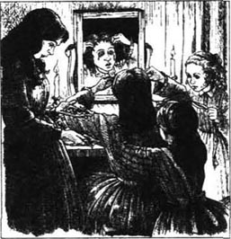
“看哪！”一两天之后，麦格兴奋地喊。她朝琼挥舞着一张纸片。“一张参加萨丽·加迪那家新年聚会的请柬，是给我们俩的。妈妈说我们可以去，可我们应该穿什么哪？”
“我们最好的棉质衣裙，”琼说，“因为我们也没有别的什么可以穿的了。你的倒是像新的一样，而我的衣服在背后烧了一个小洞。”
“那你就不该让大家看见你的后背，”麦格说，“我的头发要有个新飘带，还有我的新鞋。我的手套也准备好了。”
“我的弄脏了，所以我就不带了。”
“你一定得带着手套参加舞会，琼！”麦格大喊。
“那我们就每个人都戴一只好的，手里拿着一只坏的。”琼说道。
麦格看上去很焦虑。“那好吧，可你得表现好点，行吗？不许盯着人看，或者把手放到背后。”
新年除夕，两个妹妹看着两个姐姐为舞会做准备。她们不停地跑上跑下，边笑边聊。麦格想把面庞两侧的头发弄卷，于是琼就用一副热夹子在麦格用纸包好的头发梢上做卷。
“它们应该像这样冒烟吗？”白丝问。
“这是湿头发正在变干。”琼答道。
“像是怪怪的烧焦的味道！”艾米说。
“我现在就把纸拿下来，”琼说，“你们就会看到许多的小卷。”
她把纸拿了下来——令她惊骇的是，烧焦的头发随之显露了出来！
“噢，噢！你对我的头发干了什么？”麦格哭了。
“我总是把事情弄糟，”琼沮丧地说，“真抱歉。我想是夹子太烫了。”
“别着急，”艾米对正在哭泣的麦格说，“把发带系上，这样发梢就会靠近额头一些，看上去很时髦。”
最后，麦格和琼总算准备好了。她们到了加迪那家，受到了加迪那太太友好的欢迎。麦格马上就跟萨丽玩了起来，可琼对女孩子的谈话不感兴趣，于是，她小心地倚墙而立，观看着舞会。不久麦格就被邀请去跳舞，琼看到一个红头发男孩正向她走来，她就迅速通过一扇门溜进一间小屋子。不幸的是，另一个怕羞的人已经躲在了那里面，她发现她眼前面对的是“劳伦斯家的男孩”。
“噢，天哪！我不知道已经有人在这儿了，”琼说。
那男孩笑了。“别走。我到这来是因为我谁也不认识。可我想我以前见过你，”他说，“你是不是住在我家附近？”
“隔壁，”琼说，“我们很喜欢你的圣诞礼物。”
“是我祖父送的，马奇小姐。”
“可那是你给你祖父出的主意，是吗，劳伦斯先生？”
“我不是劳伦斯先生，只是罗瑞。”他说。
“我也不是马奇小姐，只是琼，”她说，“你喜欢舞会吗？”
“有的时候喜欢，”他回答说，“我最近常在国外，不知道你们在这儿是怎么做的。”
“国外！”琼问，“噢，你去过巴黎吗？”
“我们去年冬天去的。”
“那你会说法语吗？”她问。
他用法语讲了几句话，琼用心倾听。“你是在问：‘那个穿着漂亮舞鞋的女孩子是谁？’那是我姐姐，麦格，你知道的。你觉得她漂亮吗？”
“是的，”他答道，“她看上去那么清纯和安静。”
这让琼十分高兴，不久他们俩就像老朋友一样自如地交谈起来。“我听说你学习很用功，”琼说，“那你不久要去读大学吗？”
“一两年内不会，”他回答，“我下个月满16岁，17岁以前我不会去。”
“我真希望能上大学。”琼说。
“我一想到它就感到憎恨！”罗瑞说。
琼想问为什么，可他看上去很严肃，琼没提问，而是说：“你为什么不去跳舞？”
“如果你也来我就跳。”他回答。
“我不能，因为——”琼欲言又止。
“因为什么？”
“你不说出去吗？”
“绝不会！”
“我有个坏毛病，总是离火炉很近，结果把裙子烧了，”琼说，“我只好站直了，好让人看不出这件衣服上的烧痕。想笑你就笑吧。”
可罗瑞没笑。“没关系，”他轻柔地说，“来吧。”
琼笑了。“好吧，”她说，“谢谢。”
音乐停下的时候，他们坐下来开始聊天，可琼看见麦格在向她招手。她走过去，随姐姐走进旁边的一个房间。
“我的脚转得太多，脚踝都疼了，”麦格说，“我都不能走路了，真不知道该怎么回家。”
“你穿着那双蠢笨的高跟鞋，跳得过度我一点也不吃惊，”琼说，“你得要一辆马车，或者在这儿呆一晚上。”
“要辆马车会花好多钱，”麦格说。“我也不能在这儿呆一晚上，因为房间都住满了。我只好在海娜来接我们之前休息会儿，然后再想办法。”
“他们正进去吃晚饭，”琼说，“我陪着你。”
“不，快去给我弄些咖啡来。”麦格说。
琼找到了咖啡，可马上就洒到了裙子上。她正用麦格的手套擦拭时听到一个友好的声音在跟她讲话：
“我能帮忙吗？”罗瑞说。他一只手端着一杯咖啡，另一只手举着一个盘子，上面放着一块蛋糕。
“我正给麦格找点吃的。”琼说。
“我正找人要把这些吃的送出去。”罗瑞说。他又替琼取了一些咖啡和一块蛋糕，然后三个人一起聊天，度过了一段愉快的时光，直到海娜来了。麦格早已完全忘了她脚疼的事，很快站了起来。她痛苦地喊叫了一声。罗瑞看到她不能走路，就立即邀请她们一起坐他祖父的马车回家。
“可你还不想回家呢，”琼说。
“我一向走得很早。”罗瑞回答。
他坐在车夫旁边，两个女孩和海娜坐在马车里面，兴奋地谈论舞会的情况。
“我玩得棒极了，你呢？”琼说。
“我也是，直到我受了伤，”麦格说，“萨丽的朋友安妮·莫法特请我春天到她那儿住一个星期，萨丽也去。”
琼给麦格讲述她的经历，然后她们就到家了。她们感谢了罗瑞，就悄悄地走进家门，不想惊醒任何人。然而当她们一推开卧室的门，两个小小的声音就叫起来：“快给我们讲讲舞会的事！快给我们讲讲舞会的事！”
4．The house next door
4
The house next door
'It's so nice to go to parties and drive home in carriages,' said Meg, the next morning. 'Other people live like that all the time, and I wish we could. I wish we were rich.'
'Well, we' re not,' said Jo. 'So we must do our work with a smile, the way Mother does.'
Mr March had lost most of his money helping a friend. When the two older girls discovered this, they wanted to do something to earn some money for the family, and as soon as they were old enough, they found work. Meg got a job teaching four small children. It was hard for her to be poor because she could remember the time when their home had been beautiful, with everything they wanted. And every day at Mrs King's house she saw pretty dresses, and heard talk of parties and the theatre—all the things which Meg loved.
Jo went to Aunt March, who needed someone to fetch and carry things, and read to her. She was a difficult old lady who complained a lot, but Jo did her best.
Beth was much too shy to go to school with other children, so she studied at home with her father. When he went away, and her mother was busy with war work, Beth continued to study by herself and helped Hannah keep the home tidy for the others. She also spent long, quiet hours alone, talking to her dolls or playing the old piano. Beth loved music and, although the family could not afford music lessons or a good piano for her, she tried hard to make herself a better musician.
Amy drew the most beautiful pictures and wanted to be a famous painter one day. She was a favourite with everyone, except when she complained about having to wear her cousin's old clothes because her mother could not afford to buy new ones for her.
One afternoon a week or two later, Jo went outside to clear the snow away from some of the garden so that Beth could walk there when the sun came out. She looked across to the house next door—a big stone house with lovely things inside that Jo occasionally saw through the open curtains at the windows. But it seemed a lonely, lifeless kind of house, as no children played outside, no motherly face smiled at the windows, and not many people went in and out, except the old gentleman and his grandson.
She had not seen the Laurence boy lately and wondered if he was away, but suddenly she saw him looking out of an upstairs window. She threw up a handful of soft snow and called out, 'Are you ill?'
Laurie opened the window. 'I'm almost better, thank you,' he said. 'I've had a bad cold.'
'What do you find to do?' said Jo.
'Nothing,' he said. 'They won't let me.'
'Why don't you get someone to come and see you?'
'I don't know anyone.'
'You know us,' said Jo.
'So I do!' laughed Laurie. 'Will you come, please?'
'I'll come if Mother will let me. I'll go and ask her. Shut the window and wait until I come.'
Laurie was excited and began to get ready for Jo's visit. He brushed his hair and tried to make his room tidy. Soon after, he heard voices downstairs, then a surprised servant ran up to his room.
'There's a young lady to see you, sir,' she said.
A moment later, Jo appeared with a box in one hand and Beth's three small cats in the other. 'Mother sends her love,' she said. 'Meg asked me to bring some of her cake, and Beth thought you would like to play with her cats. Isn't she funny?'
Laurie laughed. 'How kind you all are,' he said.
'Shall I read to you?' said Jo.
'I'd rather talk,' he said.
'I can talk all day,' said Jo, smiling. 'Beth says I never know when to stop.'
'Is Beth the one who stays at home?'
'Yes, that's Beth. She's a good girl.'
'The pretty one is Meg, and the curly-haired one is Amy, is that right?' he said.
'Yes. How did you know?'
Laurie's face became red. 'I hear you calling to each other, and you always seem to be having so much fun. Sometimes, in the evenings, you forget to close your curtains and I can see you sitting round the fire with your mother. I haven't got a mother.'
Jo saw the sadness in his eyes. 'Why don't you come over and see us? Would your grandfather let you?'
'Perhaps, if your mother asked him,' said Laurie. 'He spends a lot of time among his books, and Mr Brooke, my tutor, doesn't live here. So I haven't anyone to go out with. Do you like your school?'
'I don't go to school. I go out to work—to my aunt's,' said Jo. She described the difficult old lady and made him laugh with her stories. She told him all about her sisters, the plays they acted, and their hopes and fears for their father. Then they talked about books, and Jo discovered that Laurie loved them as much as she did.
'Come and see our library,' he said. 'Grandfather is out, so you needn't be afraid.'
'I'm not afraid of anything,' replied Jo.
He took her down to a room where the walls were covered with books and pictures.
'You should be the happiest boy in the world!' said Jo, sitting in a big armchair and looking round.
'A person can't live on books,' he said.
Suddenly, a bell rang.
Jo jumped up out of the chair. 'It's your grandfather!' she said.
'What if it is?' said Laurie, with a smile. 'You're not afraid of anything, remember?'
'Perhaps I am a little bit afraid of him,' said Jo.
The servant came in at that moment. 'The doctor is here to see you, sir,' she said to Laurie.
'Can I leave you for a minute or two, Jo?' he said.
'Yes, I'm very happy here,' said Jo.
He went away and Jo was staring at a large picture of the old gentleman when the door opened again. Without turning, she said, 'I won't be afraid of him, because he's got kind eyes, although his mouth looks hard and cold. He's not as handsome as my grandfather, but I like him.'
'Thank you,' said a deep voice behind her.
She turned quickly—and saw old Mr Laurence!
Jo's face turned a bright red and she wanted to run away. But the old man's eyes looked kinder than those in the picture and seemed to have a smile in them.
'So you're not afraid of me, eh?' he said.
'Not much, sir.'
'But I'm not as handsome as your grandfather?'
'Not quite, sir.'
'But you like me.' He laughed and shook hands with her. 'Now, what have you been doing with my grandson?'
'Trying to cheer him up, sir,' said Jo. 'He seems a bit lonely.'
'Then come and have some tea with us.'
Laurie was very surprised to see Jo with his grandfather, but was soon talking and laughing happily with Jo. The old man watched the two young people and noticed the change in his grandson. 'She's right,' he thought. 'The boy does need cheering up.'
After tea, they went into a room where there was a large and beautiful piano.
'Do you play?' Jo asked Laurie.
'Sometimes,' he answered.
'Play now. I want to hear it so I can tell Beth.'
So Laurie played and Jo listened. Afterwards, Mr Laurence said, 'He plays quite well, but I want him to do well in more important things. Now, I hope you'll come again.' He shook hands with her. 'Goodnight, Jo.'
Laurie walked to the door with her. 'He doesn't like to hear me play,' he said.
'Why not?' said Jo.
'I'll tell you one day,' he said.
When Jo told the family of her afternoon's adventures, they all wanted to go and visit the big house.
'Mother, why doesn't Mr Laurence like to hear Laurie play the piano?' asked Jo.
'Laurie's father married an Italian lady, a musician,' said Mrs March. 'The old man didn't like her, and never saw his son after they were married. Laurie was born in Italy, but his parents died when he was a child, and his grandfather brought him home. Laurie loves music and I expect his grandfather is afraid he'll want to be a musician like his mother.'
'Laurie should be a musician if he wants to be,' said Jo. 'Sending him to college will just make him unhappy.'
discover v. find out. 发现。
difficult adj. not easily pleased. 不易取悦或满足的。
complain v. say that one is not satisfied. 抱怨。
continue v. go on. 继续。
afford v. spare or find enough money for. 省出或找到足够的金钱去（做某事）。
musician n. person skilled in music. 精于音乐的人。
garden n. ground used for growing flowers, fruits, vegetables. 花园；果园；菜园。
occasionally adv. now and then; at times. 偶尔地。
shut v. 关；闭。
window n. 窗。
ready adj. in the condition for doing something. 准备好的。
funny adj. causing fun or amusement. 有趣的。
curtain n. piece of cloth or lace hung up at a window. 窗帘。
come over from a distance. 从远处来。
describe v. say what is like. 描述。
library n. 图书馆。
gentleman n. 绅士。
handsome adj. of fine appearance. 漂亮的；英俊的。
bright adj. shining. 明亮的。
lonely adj. without companions. 孤单的。
notice v. observe. 注意（到）。
sometimes adv. from time to time. 有时。
afterwards adv. after; later. 以后；后来。
Italian adj. 意大利的。
expect v. think or believe that something will happen. 预期；盼望。
college n. school for higher or professional education. 学院。
隔壁的房子
4 隔壁的房子
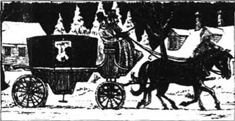
“去参加舞会然后坐马车回家真好，”第二天早晨麦格说道，“其他人一直都是这样生活的，真希望我们也是。真希望我们是富有的。”
“哎，我们不富有，”琼说，“所以我们必须面带微笑做我们的工作，就像妈妈那样。”
马奇先生为了帮助一位朋友失去了他的大部分钱。当两个年长的女孩子发现这件事时，她们就想要做些事来帮家里挣钱。她们等年龄一到，就去找工作。麦格找到了一份给四个小孩教课的工作。对她来说贫困是艰难的，因为她能记得当初家里是多么漂亮，她们要什么有什么。每天在金太太的家里她都能看到漂亮的衣服，听到有关舞会和剧院的议论——这些都是麦格所热衷的。
琼到了马奇姑妈家，她需要有人帮她拿取东西，给她读文章。她是个很难缠的老太太，经常抱怨，可琼尽力而为。
白丝太害羞，不愿跟其他孩子一起上学，于是她呆在家里跟父亲学习。父亲走了之后，母亲忙于战争方面的工作，白丝就继续自学，同时帮助海娜为其他人整理房间。她也常常花很长时间安静地独处，和她的玩具娃娃说话，或者弹那架旧钢琴。白丝热爱音乐，虽然家里不能供她上音乐课或买架好钢琴给她，她还是努力使自己成为一名更好的音乐家。
艾米会画最漂亮的画，她希望有一天能成为名画家。她很讨大家的喜欢，不过当母亲由于买不起新衣服而让她穿上表姐的旧衣服，她发牢骚的时候，情形就不同了。
一两个星期以后的一个下午，琼到外面去，想把花园里的部分雪清扫掉，这样白丝就可以在太阳出来时到那儿去散步了。她朝隔壁的房子看过去——那是座大的石头盖的房子，里面有很多漂亮的东西，琼有时会从那些打开窗帘的窗户看到里面。可它看上去像是一座孤独的毫无生气的房子，没有孩子在外面玩，没有窗边慈母的笑脸，也没有许多进进出出的人，只有那个老先生和他的孙子。
她最近一直没有见到劳伦斯家的男孩，她怀疑他已经走了，可突然间，她见到他正从楼上的一扇窗户朝外张望。她向上扔了一把松软的雪，喊道：“你是病了吗？”
罗瑞打开窗户。“我好多了，谢谢，”他说，“我得了重感冒。”
“你都做些什么？”琼问。
“什么都不做，”他回答，“他们不让我做。”
“你为什么不让别人去看你呢？”
“我谁也不认识。”
“你认识我们啊，”琼道。
“那当然！”罗瑞笑了，“你愿意来吗？”
“如果妈妈同意我就来。我去问她。关上窗户等着我。”
罗瑞很兴奋，开始为琼的来访做准备。他梳了头，尽量把他的房屋弄整齐。过了不久，他听到楼下有动静，然后一个吃了一惊的仆人跑上他的房间。
“有位年轻的女士来看您，先生。”她说。
片刻之后，琼出现了，一只手抱着一个盒子，另一只手抱着白丝的三只小猫。“妈妈向你问好，”她说，“麦格叫我给你带些好的蛋糕来。白丝认为你会喜欢跟她的小猫玩儿。她是不是很有意思？”
罗瑞笑着说：“你们真好。”
“我给你读文章怎么样？”琼说。
“我宁愿聊聊天。”他答道。
“我可以聊一整天，”琼笑答，“白丝说我总是不知道在哪儿告一段落。”
“白丝是那个呆在家里的孩子吗？”
“是的，那是白丝。她是个好孩子。”
“漂亮的那个是麦格，卷头发的那个是艾米，对吗？”罗瑞问。
“是的，你怎么知道？”
罗瑞的脸红了。“我听到你们互相喊对方。你们看起来总有很多有趣的事。有时候，晚上你们忘记拉窗帘，我能看见你们和母亲一起坐在炉火边。我没有母亲。”
琼看到了他眼中的悲伤。“你干吗不到我家来看我们？你祖父会让你来吗？”
“可能，如果你母亲跟他讲的话，”罗瑞说，“他花很多时间看书，而我的家庭教师布鲁克先生不住在这儿，所以没人和我一起出去。你喜欢你的学校吗？”
“我没上学。我去工作——到我姑妈家。”琼回答。她描述了那个难缠的老太太，她的故事让他发笑。她告诉他关于她的姐妹的所有事，她们演过的剧，以及她们对父亲的期盼和担忧。然后他们谈到了书籍，琼发现罗瑞像她一样爱书。
“到我们的图书室来，”他说，“祖父出门了，所以你不用怕。”
“我什么也不怕，”琼答道。
他带她来到楼下的一个房间，那里四壁都为书籍和画所遮盖。
“你应该是世界上最幸福的男孩！”琼叹道，边说边坐进一张大扶手椅，环顾四周。
“一个人不能靠书生活。”他说。
突然，铃响了。
琼从椅子上跳起来。“是你祖父！”她说。
“是又怎样？”罗瑞笑着说，“你什么都不怕，记得吗？”
“也许我有一点点怕他。”琼说。
此时仆人走进来。“医生来看您了，先生。”她对罗瑞说。
“我能离开一两分钟吗，琼？”他说。
“可以，我很高兴呆在这儿，”琼答道。
他走开了。当琼正在端详那位老先生的一大幅画像时，门又开了。她没有转过身，说道：“我不害怕他，因为虽然他的嘴巴看上去又硬又冷，他的眼睛却很和善。他不像我祖父那么英俊，可我喜欢他。”
“谢谢你。”她背后有一个深沉的声音说。
她很快转过身——看到了老劳伦斯先生！
琼的脸变得通红，她想跑掉。可那位老先生的眼睛看上去比画像里的还要和善，好像还带着笑意。
“看来你不怕我，啊？”他问道。
“不太怕，先生。”
“可我不如你祖父长得英俊？”
“不如，先生。”
“可你喜欢我。”他笑着和她握握手。“现在告诉我，你和我孙子一起干了些什么？”
“我尽力使他高兴起来，先生。”琼答道，“他看上去有些孤独。”
“那来和我们一起喝点茶吧。”
罗瑞看到琼和他祖父在一起很吃惊，可不久就高兴地和琼说说笑笑起来。老人望着两个年轻人，察觉到了他孙子的变化。“她是对的，”他想，“这孩子需要高兴起来。”
喝过茶，他们来到一个房间，里面摆着一架漂亮的大钢琴。
“你弹琴吗？”琼问罗瑞。
“有时弹。”他答道。
“现在就弹吧，我得听听，好去告诉白丝。”
然后罗瑞弹起钢琴，琼听着，之后，劳伦斯先生说：“他弹得很好，可我要他把更重要的事情做好。那好，希望你能再来。”他跟她握了握手。“晚安，琼。”
罗瑞随她走到门口。“他不喜欢我弹琴。”他说。
“为什么不？”琼问。
“我改天会告诉你的。”他回答。
当琼告诉家人她下午的经历后，她们也都很想去看看那座大房子。
“妈妈，为什么劳伦斯先生不喜欢听罗瑞弹琴？”琼问。
“罗瑞的父亲娶了一个意大利女人，她是个音乐师，”马奇太太说，“老人不喜欢她，自从他们结婚后就再也没见他的儿子。罗瑞出生在意大利，可在他小时候他父母就去世了。他祖父把他接到家里来。罗瑞很喜欢音乐。我想他祖父一定是怕他想成为他母亲那样的音乐师。”
“罗瑞如果愿意，他就应该做音乐师，”琼说，“把他送到大学去只会让他不快乐。”
5．A surprise for Beth
5
A surprise for Beth
Laurie and the four girls were soon great friends. Mr Brooke complained to the old gentleman that his student was always running across to see the Marches.
'Let him have a bit of a holiday,' said Mr Laurence. 'He can catch up with his studies later.'
What good times they had! Writing and acting plays. happy evenings at the Marches, and little parties at the big house. Only Beth was too shy to go there. When Mr Laurence heard about Beth's shyness, he came to have tea with their mother one day, and began to talk about music and great singers he had heard. Beth found it impossible to stay in her corner and came to listen.
'Laurie hasn't much time for his music,' Mr Laurence told Mrs March, 'so the piano is not used very often. Would any of your girls like to play it sometimes? They needn't see or speak to anyone, and I'll be in my study.' He got up to go. 'But if they don't want to come...'
At this moment, a little hand touched his own. It was Beth's. 'I—I want to come,' she said, her voice shaking. 'Very much.'
'You're the musical girl,' said Mr Laurence, gently.
'I'm Beth. Yes, I love music, and I shall come.'
The next day, Beth waited until the old and the young gentle men both went out, then she ran across to the big house and found her way to the room with the beautiful piano. As soon as she began to play, she forgot her fears immediately in the delight which the music gave her.
After that, Beth went every day. She never knew that Mr Laurence often opened his study door to hear her playing, or that Laurie stood in the hall to keep the servants away from the shy little girl. But she was so grateful that she asked her mother and sisters to help her make the old gentleman a pair of slippers. After several days' careful sewing, the slippers were finished. Then Beth wrote a short letter and, with Laurie's help, left it with the slippers in the old man's study one morning, before he was up.
The next day, Beth went out for a walk, and when she came back the others were waiting for her. 'Here's a letter for you, Beth!' they called out. 'Come and read it!' She hurried to the house and they took her into the front room. 'Look there!' everyone was saying at once. Beth looked—and got the biggest surprise of her life! For there stood a lovely little piano, with a letter on the top of it, addressed to: 'Miss Elizabeth March'.
'You—you read it, Jo,' whispered Beth. 'I can't.'
So Jo opened the letter and began to read.
'Dear Miss March,' she read, 'I have had many pairs of slippers but none which have pleased me so much as yours. I should like to thank you for your kindness by sending you something that once belonged to my little granddaughter, who died. With many thanks. I am your good friend, James Laurence.'
Jo put an arm around her sister. 'Now try it, Beth,' she said.
Beth sat down and began to play, and everyone thought it was the most perfect piano they had ever heard.
'You'll have to go and thank him,' said Jo, with a smile, knowing that Beth was much too shy to do anything like that.
But Beth surprised them all. 'I'll do it at once,' she said bravely, and away she walked, through the garden and into the big house next door. She went up to the old gentleman's study and knocked on the door.
'Come in,' said Mr Laurence.
Beth went in. 'I came to say thank you, sir,' she began, in her quiet little voice. But he looked so friendly that she ran and put both her arms around his neck and kissed him.
The old gentleman was so surprised that he nearly fell off his chair. But he was very pleased indeed by that shy little kiss, and soon the two of them were talking like old friends. Later, he walked home with Beth. The girls, watching with great interest from the window, could not believe their eyes. 'Well,' Meg said, 'I do believe the world is coming to an end!'
a bit of a rather a. 相当地。
catch up do all the work that has not yet been done. 赶做未做完的工作。
impossible adj. not possible. 不可能的。
delight n. joy. 乐趣。
grateful adj. feeling or showing thanks. 感激的。
careful adj. taking care; cautious. 小心的。
surprise n. something sudden or unexpected. 惊骇；意外之事。
belong to be the property of. 属于。
perfect adj. without fault. 完美的。
bravely adv. ready to face danger; having no fear. 勇敢地。
knock v. hit. 击；敲。
白丝的惊喜
5 白丝的惊喜
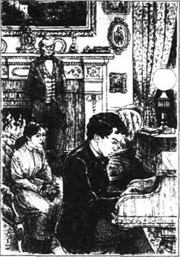
罗瑞和四个女孩子很快就成了要好的朋友。布鲁克先生向老先生抱怨说，他的学生常跑过去看望马奇一家。
“让他放些假吧，”劳伦斯先生说，“他以后会补上他的功课的。”
他们玩得真开心！编写和上演剧本，有时在马奇家度过欢乐的夜晚，有时在大房子里举办小型的聚会。只是白丝太害羞，她不去那儿。劳伦斯先生听说了白丝的羞涩以后，有一天他来跟她们的母亲一起喝茶，并开始谈论音乐和他所听说过的歌唱家。白丝发觉自己根本不可能呆在她的角落里，于是过来倾听。
“罗瑞没什么时间弹琴，”劳伦斯先生对马奇太太说，“所以钢琴不怎么常用。你的孩子有谁想有时过来弹琴吗？他们不用跟任何人谈话，而我会呆在我自己的书房里。”他站起身要走，“可如果她们不愿意来……”
此时，一只小手碰了碰他的手。是白丝。“我，我想来，”她说，声音颤抖，“非常想。”
“你就是那个喜欢音乐的孩子？”劳伦斯先生轻柔地问。
“我是白丝。是的，我热爱音乐，我愿意来。”
第二天，白丝等到老先生和小先生都出门去了，她就跑到那座大房子里，找到那个摆着钢琴的房间。她一开始弹琴，立刻就在音乐带给她的愉快中忘记了恐惧。
从此以后，白丝每天都去弹琴。她从不知道劳伦斯先生常常打开他书房的门听她弹琴，或者罗瑞站在大厅里让仆人们走开以不打扰这个害羞的女孩。可是她非常感激，就让她母亲和姐妹们帮她给老先生做了一双拖鞋。经过几天精心的缝制，拖鞋做好了。然后白丝写了一张简短的字条，在罗瑞的帮助下，有一天早晨，趁老先生还没起床时将字条和拖鞋放进了他的书房。
第二天，白丝出门散步，当她回家时，大家都在等她。“这儿有你一封信，白丝！”她们喊。“快过来读读！”她赶快回到家，她们带她来到前厅。“看那儿！”每个人都立即说。白丝看过去——她得到了她一生中最大的惊喜！因为那里摆放着一架小钢琴，上面放着一封信，写道：“伊丽莎白·马奇小姐收。”
“你，你读吧，琼，”白丝喃喃地说，“我读不了。”
于是琼打开那封信读起来。
“亲爱的马奇小姐，”她读道，“我有过很多双拖鞋，可没有一双像你送我的那双那样使我高兴。为了感谢你，我想送你一样曾经属于我死去的小孙女的东西。谢谢，我是你的好朋友，詹姆斯·劳伦斯。”
琼用一只手臂搂住她的妹妹。“现在就试试，白丝。”她说。
白丝坐下来开始弹琴，每个人都认为这是她们听过的最好的钢琴。
“你得去谢谢他。”琼说，面带微笑。她深知白丝太害羞了，肯定不会去做那种事。
可白丝让大家都吃了一惊。“我马上就去。”她勇敢地说，然后她就走了，穿过花园，来到隔壁的大房子。她走到楼上老先生的书房，敲了敲门。
“请进。”劳伦斯先生说。
白丝走了进去。“我来向您说声谢谢，先生。”她开始用她那平静细小的声音说话。可他看上去如此慈祥，她跑过去用双臂搂住他的脖子吻了他一下。
老先生太吃惊了，他几乎从他的椅子上掉了下来。可他实际上被那个羞涩的轻轻的吻弄得很高兴，不久他们俩就像老朋友一样地聊天了。之后，他陪白丝走回家。其他的孩子们从窗户中以极大的兴趣看着这一幕，简直不敢相信她们的眼睛。“哎，”麦格说，“我相信世界末日就要到了。”
6．Amy in trouble
6
Amy in trouble
'Where are you going?' Amy asked Meg and Jo one afternoon. 'I want to come, too.'
'You can't, dear, you're not invited,' said Meg.
'You're going somewhere with Laurie, I know you are!'
'Yes, we are,' said Jo. 'Now stop annoying us.'
'You're going to the theatre!' Amy said suddenly. 'I want to go with you!'
'We could take her, I suppose,' began Meg.
'No, Laurie only invited us,' said Jo.
'I shall go,' shouted Amy. 'Meg says I can.'
'You just stay where you are!' said Jo, angrily.
'I'll make you sorry for this, Jo March!' Amy shouted, as Meg and Jo left the house.
The two older sisters enjoyed themselves at the theatre, but Jo couldn't stop worrying as she wondered what Amy would do to 'make her sorry'.
She found out the next afternoon.
Beth, Amy and Meg were sitting together when Jo ran into the room. 'Has anyone taken my notebook?' Jo asked.
Meg and Beth said 'No' at once, but Amy said nothing.
'Amy, you've got it,' said Jo.
'No, I haven't,' said Amy.
'That's a lie!' said Jo. 'Tell me the truth, or I'll make you!'
'Do what you like,' said Amy. 'You'll never see your stupid book again, because I burned it!'
Jo's face went white. 'What! But I worked so hard writing my stories!'
'I said I'd make you sorry, and I have!' said Amy.
Jo jumped at Amy and shook her shoulders. 'You wicked, wicked girl!' cried Jo. 'I'll never, ever forgive you!' And she ran out of the room.
Mrs March came home and heard the story.
'Oh, how could you do that, Amy?' she said. 'That was Jo's book of stories. She wrote them all herself, and was hoping to make them good enough to print.'
Slowly, Amy began to understand the terrible thing she had done, and started to cry. Later, when Jo appeared for tea, Amy begged her sister to forgive her.
'I shall never forgive you,' Jo answered.
It was not a happy evening, and when singing time came, Jo remained silent. Afterwards, she kissed her mother and said 'Goodnight'.
'My dear, don't go to bed feeling so angry with your sister,' whispered Mrs March.
'I'm sorry, Mother, I can't forgive her,' replied Jo.
Next day, Jo wanted to get out of the house, so she picked up her skates and went next door to ask Laurie to take her skating.
Amy heard them going. 'Jo promised to take me with her next time!' she complained.
'It's hard for her to forgive you, Amy,' said Meg. 'Go after them and wait until Jo is enjoying herself, then give her a kiss or do something kind.'
It was not far to the river, but Jo and Laurie were already skating when Amy arrived. Jo saw Amy but turned away. Laurie was carefully skating along the edge of the ice and didn't see the younger girl.
Amy put her skates on and stood on the ice.
'Keep near the edge. The ice isn't safe in the middle,' Laurie called to Jo, then he disappeared round the first bend in the river.
Jo heard, but Amy did not. Jo realized that Amy probably hadn't heard, but she said nothing and skated after Laurie. 'Let Amy look after herself!' Jo thought.
Amy skated out towards the smoother ice in the middle of the river. Jo reached the bend, and for a moment she stood still, a strange feeling in her heart. Something made her turn round—just in time to see Amy throw up her hands and go crashing through the ice into the cold water! Amy gave a cry that make Jo's heart stop with fear. She tried to call Laurie, but her voice was gone, and for a second she could only stand and stare at the little blue hood of Amy's coat above the black water.
Suddenly, Laurie skated past her and shouted, 'Bring a piece of wood from the side of the river, quickly!'
Wild with fear, Jo fetched some wood and pulled it across the ice, while Laurie held Amy's head above the water. Together, they got her out.
She was more frightened than hurt, and was quickly taken home. They covered her in blankets and tried to calm her, and after a little while she fell asleep in front of the warm fire. Later, when everything was quiet, Jo asked her mother, 'Are you sure she's safe?'
'Quite safe, dear. It was sensible to get her home as quickly as you did.'
'Laurie did it all,' said Jo. 'Mother, if she should die, it will be my fault. I get angry so quickly. Oh, why can't I be more like you?'
'I get angry nearly every day of my life, Jo,' said Mrs March, 'but I've learned not to show it. I've learned to stop myself saying the angry words that come to my lips, and you must try to do the same, my dear.'
Amy moved in her sleep and Jo looked at her. 'I refused to forgive her, and today, she nearly died! And it was Laurie who saved her. How could I be so wicked?' Jo began to cry.
Then Amy opened her eyes and held out her arms, with a smile that went straight to Jo's heart. Neither of them said a word, but they held each other close, and everything was forgiven and forgotten.
annoy v. irritate. 打搅。
sorry adj. feeling regret or sadness. 感到遗憾或悲伤的。
notebook n. book in which to write notes. 笔记簿。
lie n. 谎言。
stupid adj. foolish. 愚蠢的。
jump v. rise suddenly. 跳。
wicked adj. bad; wrong. 错的；缺德的。
forgive v. no longer have hard feelings towards. 宽恕。
whisper v. 低语。
promise v. make a promise. 答应。
go after try to win or obtain. 设法追求某人。
edge n. outer limit of a surface. 边缘。
realize v. understand. 了解。
blanket n. 毛毯。
calm v. make or become calm. 使平静。
safe adj. free from danger. 安全的。
sensible adj. having or showing good sense. 明智的。
艾米遇到麻烦
6 艾米遇到麻烦
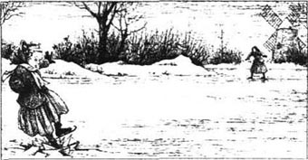
“你们上哪儿去？”一天下午艾米问麦格和琼，“我也要去。”
“你不能去，亲爱的，你没被邀请。”麦格说。
“你们是和罗瑞一起出去，我知道！”
“是的，”琼说，“别烦我们了。”
“你们是要去剧院，”艾米突然说，“我要和你们一起去！”
“我想我们可以带上她。”麦格说。
“不行，罗瑞只邀请了咱们俩，”琼说。
“我就要去，”艾米喊道，“麦格说我可以去。”
“你就呆在那儿！”琼生气地说。
“我会让你为此感到后悔的，琼·马奇！”麦格和琼离开家时艾米大声喊道。
两个姐姐在剧院很开心，可琼不停地担心，她纳闷艾米会用什么办法来“让她后悔”。
第二天下午她就知道了。
白丝、艾米和麦格坐在一起，此时琼冲进房间。“谁拿了我的笔记本？”琼问。
麦格和白丝立即说：“没拿。”可艾米没作声。
“艾米，是你拿了。”琼说。
“不，我没拿。”艾米答道。
“你说谎！”琼说，“告诉我实话，否则我会逼你讲！”
“随你的便，”艾米说，“你永远也不会见到那个讨厌的笔记本了，因为我把它烧了！”
琼的脸变得惨白。“什么？我那么努力地写我的故事！”
“我说过会让你后悔，现在我做到了！”艾米说。
琼跳过来摇晃着艾米的肩膀，“你这个可恶透顶的孩子！”琼喊着，“我永远永远也不会饶恕你的！”然后她就跑出了房间。
马奇太太回到家里听说了这件事。
“噢，你怎么能那样做呢，艾米？”她说，“那是琼的故事书。那些都是她自己写的，她期望有一天把它们修改好了能够去发表的。”
慢慢地，艾米开始意识到她所做的事情有多糟，她开始哭起来。后来，当琼来喝茶的时候，艾米请求她姐姐原谅她。
“我永远也不会原谅你。”琼回答。
那天晚上很不愉快。当唱歌的时间到了的时候，琼默不作声。后来，她吻了吻母亲说：“晚安！”
“我亲爱的，别带着对你妹妹的怨情上床。”马奇太太小声说。
“抱歉，妈妈，我不能原谅她。”琼回答。
第二天，琼想要出门，于是她拿起她的冰鞋到隔壁去叫罗瑞带她去滑冰。
艾米听见他们出去了。“琼答应过我下次带我去的！”她抱怨说。
“她很难原谅你，艾米，”麦格说，“你跟着他们。等琼高兴的时候就给她一个吻或做点其它什么友好的事。”
到河边的路并不远，可当艾米到那儿的时候琼和罗瑞已经在滑冰了。琼看见了艾米，可她背过身去。罗瑞正沿着冰的边缘专心致志地滑，没有看到这个小一点的女孩。
艾米换上冰鞋站到了冰上。
“在边上滑，中间的冰不安全。”罗瑞朝琼喊。然后他就消失在河的第一个拐角那边。
琼听见了，可艾米没听见。琼意识到艾米可能没听见，可她什么也没说，跟着罗瑞滑过去。“让艾米自己照顾自己吧！”她想。
艾米向河中心冰面光滑的地方滑去。琼滑到了拐弯的地方，她站定了片刻，心里有种奇怪的感觉。有什么事使她转过身——正好看到艾米举起双手滑过冰面，掉进了冰冷的河水里！艾米喊叫了一声，使琼的心几乎吓得停止了跳动。她想喊罗瑞，可她的声音怎么也发不出来，有几秒钟她只得站在那儿盯着艾米那蓝色外衣的帽子漂在黑色的水面上。
突然，罗瑞滑过她身边，对她喊：“到岸边拿块木头来，快！”
琼吓疯了，她去拿了木头，把它拖过冰面，此时罗瑞将艾米的头托出水面。他们一起把她从水中捞了出来。
她没受什么伤，更多的是受了惊吓，被很快送回了家。他们用毛毯盖住她，并试图安慰她，过了一会儿她就在温暖的炉火前睡着了。然后，当一切安静下来，琼问母亲：“你能肯定她没事吗？”
“肯定没事，亲爱的，你很明智，尽可能快地把她送回家来。”
“都是罗瑞做的。”琼说，“妈妈，如果她死了，那都是我的错。我太爱生气了。噢，我为什么就不能像你呢？”
“我每天都会生气，琼，”马奇太太说，“但我学会了不表现出来。我学会了在生气的话就要到嘴边时住口，你也必须要尽力这样做，我亲爱的。”
艾米在睡梦中动了一下，琼看了看她。“我拒绝饶恕她，结果今天她差点就死了！是罗瑞救了她。我怎么会这么可恶呢？”琼哭了。
然后艾米睁开了双眼，伸出了她的双臂，面带微笑，那微笑一直走进了琼的心里。她们谁也没说话，但她们紧紧拥抱在一起，一切都已被原谅和遗忘了。
7．Meg hears some gossip
7
Meg hears some gossip
Annie Moffat did not forget her promised invitation, and one April day Meg went to stay at the Moffats' large house. Meg thought it was wonderful. She loved riding in fine carriages, wearing her best dress every day, and doing nothing except enjoy herself. She soon began to talk about fashionable clothes and hairstyles in the way that the other girls did. And the more Meg saw of Annie's pretty things, the more she wished that she, too, was rich.
Annie's older sisters, Belle and Clara, were fine young ladies; Mr Moffat was a fat, friendly gentleman; and Mrs Moffat was a fat, friendly lady. They were all very kind to Meg and did their best to make her feel at home.
When the evening for a 'small party' came, Meg's best dress looked very old next to Sallie's new one, but no one said anything about it. The girls were getting ready when a servant brought in a box of flowers.
'For Miss March,' she said. 'And here's a letter.'
'What fun! Who are they from?' said the girls. 'We didn't know you had a young man.'
'The letter is from Mother and the flowers are from Laurie,' said Meg, simply.
'Oh,' said Annie, with a strange look.
Her mother's loving words and Laurie's kindness made Meg feel much happier and she enjoyed the party very much. Annie made her sing, and someone said that Meg had a fine voice. So Meg was having a nice time—until she heard someone say, on the other side of a large table of flowers: 'How old is the Laurence boy?'
'Sixteen or seventeen, I think,' said another voice.
'It would be an excellent thing for one of those girls,' said a third voice. 'Sallie says they are very friendly, and the old man thinks they are all wonderful.'
'I expect Mrs March has made her plans,' said Mrs Moffat's voice, 'but do you think the girl knows of them?'
'She told that little lie about her mother, and her cheeks went pink. I'm sure the note was from the boy really. Poor thing! She'd be very pretty if she had some nice clothes. Do you think she'll mind if we offer to lend her a dress for Thursday?'
'I shall ask young Laurence to come, and we'll have some fun with her afterwards.'
Meg tried to forget what she'd heard, but could not. The gossip made her angry, and she was glad when the party was over and she was alone in her bed. She cried quietly to herself. Why did people have to say those things? She and Laurie were just friends, but now that friendship felt damaged by the unkind gossip.
The next day, Miss Belle said, 'Meg, dear, we've sent an invitation to your friend, Mr Laurence, for Thursday.'
Meg pretended to misunderstand. 'You're very kind, but I'm afraid he won't come. He's nearly seventy.'
Miss Belle laughed. 'I mean the young man.'
'There isn't one,' said Meg. 'Laurie is only a boy.'
'Isn't he about your age?' said Clara.
'Nearer Jo's,' said Meg. 'I'm seventeen in August.'
'It's nice of him to send you flowers,' said Annie.
'He often does, to all of us,' said Meg. 'My mother and old Mr Laurence are friends, you know.'
'What will you wear on Thursday?' asked Sallie.
'My white dress again, I haven't got any others.'
'No others?' said Sallie. 'How funny—'
'I have a pretty blue dress I can't wear any more, Meg,' said Belle. 'It will please me if you wear it.'
'You're very kind, but—,' began Meg.
'Please, do,' said Belle. 'You'll look quite beautiful in it.'
Meg couldn't refuse this kind offer and, on the Thursday evening, Belle helped to change Meg into a fine lady. She brushed and curled her hair, reddened her lips, then helped her to get into the sky-blue dress. The neck of the dress was cut very low, and Meg was quite shocked when she saw herself in the mirror. A necklace and earrings were added, and Meg was ready for the party.
At first, she felt strange in all the fine clothes, but she soon discovered that people who did not usually notice her now came to speak to her. Several young men who had only stared before now asked to be introduced.
Suddenly, Meg saw Laurie across the room. He was staring at her, and he didn't look very pleased. Meg began to feel uncomfortable, and she wished that she had worn her old dress. As she walked up to Laurie, she saw Belle and Annie watching them both and smiling.
'I'm glad you came,' Meg said to Laurie, in her most grown-up voice. 'I was afraid you wouldn't.'
'Jo wanted me to come and tell her how you looked,' said Laurie.
'What will you tell her?'
'I'll say I didn't know you, because you look so unlike yourself: I'm quite afraid of you,' he said.
'The girls dressed me up for fun,' said Meg. 'Don't you like it?'
'No, I don't,' came the cool reply.
Meg became angry. 'Then I shan't stay with you!' And she walked off towards the window.
A moment or two later, an older man went past her and she heard him say to his friend, 'That girl has been dressed up like a doll.'
'Oh dear,' thought Meg. 'Why didn't I wear my own things?'
She turned and saw Laurie behind her. 'Please forgive me,' he said. 'Come and have something to eat.'
Meg tried to look annoyed.
'Please come,' he said again. 'I don't like your dress, but I do think you are—wonderful.'
Meg smiled and found it impossible to stay angry with him. 'Please don't tell them at home about my dress,' she said. 'They won't understand that it was just for fun, and it will worry Mother. I was stupid to wear it, but I'll tell them myself.'
'I won't say anything,' he promised.
He did not see her again until supper time, when she was drinking wine with two other boys.
'You'll feel ill tomorrow, if you drink much of that, Meg,' Laurie whispered to her.
'I'm not Meg tonight,' she said. 'I'm a doll who does crazy things. Tomorrow, I'll be good again.'
Meg danced and laughed and talked to as many young men as she could manage, but went to bed feeling that she hadn't enjoyed herself as much as she had expected.
She was sick all the next day, and on Saturday went home, quite tired of her fortnight's fun.
'I'm glad to be home,' she said to her mother and Jo, after telling them how she was dressed up like a doll, drank too much wine, and was ill afterwards. She had laughed while telling them the story, but her face still looked worried at the end.
'There is something else, I think,' said Mrs March, smoothing Meg's cheek, which suddenly became rose-red.
'Yes,' Meg said slowly. 'I hate people saying and thinking awful things about us and Laurie.' Then she told them the gossip she had heard.
'What rubbish!' said Jo. 'Just wait until I see Annie Moffat! How stupid to think that Mother has "plans", and that we are kind to Laurie because he is rich and may marry one of us one day. He'll laugh when I tell him!'
'No, Jo,' said her mother. 'You must never repeat wicked gossip.'
'Do you have "plans", Mother?' asked Meg.
'All mothers do, dear,' said Mrs March. 'But my plans are different from Mrs Moffat's, I suspect. I want my daughters to be loved, and I want people to think well of them. I want them to marry well, but not to marry rich men just because they are rich. I'd rather you were poor men's wives, if that meant you had happy, peaceful lives. But your father and I believe that we'll always be proud of our daughters, whether they are married or single.'
'You will, you will!' said Meg and Jo, together.
wonderful adj. surprising. 令人惊奇的。
hairstyle n. style of haircut. 发型。
friendly adj. acting as a friend. 友善的。
feel at home as if in one's own house. 感觉如在自己家中；无拘束。
excellent adj. very good. 优秀的。
cheek n. either side of the face below the eye. 颊。
lend v. 借出。
gossip n. idle, often ill-natured talk about affairs of other people. 闲话。
damage v. harm. 损害。
pretend v. make oneself appear (to be something). 佯装。
refuse v. say "no" to. 拒绝。
shocked adj. filled with surprised horror. 震惊的。
mirror n. polished surface that reflects images. 镜子。
stare v. look fixedly. 凝视。
doll n. model of a baby or person. 洋娃娃。
as much as the same (as). 与……相同。
fortnight n. period of two weeks. 两星期。
crazy adj. foolish. 糊涂的。
rubbish n. nonsense. 无意义的话。
repeat v. say or do again. 重说；重做。
peaceful adj. calm; quiet. 安详的。
麦格听到了闲言碎语
7 麦格听到了闲言碎语
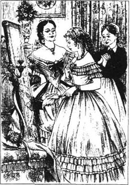
安妮·莫法特没有忘记她答应过的邀请，四月的一天，麦格来到了莫法特家的大房子里。麦格觉得这太好了。她喜欢坐漂亮的马车，每天都穿着她最好的衣服，除了玩乐以外不做任何事情。不久她就开始像其他女孩子一样谈论起时髦的衣服和发型来。麦格见到安妮的漂亮东西越多，她就越希望自己也一样地富有。
安妮的姐姐贝尔和克拉拉都是很好的姑娘；莫法特先生是个胖胖的友好的绅士；莫法特太太是个胖胖的友好的女士。他们对麦格都很好，并且尽他们的所能使麦格就像在家里一样舒适。
晚上小型聚会的时候，麦格最好的衣服比起萨丽的新衣服来显得很旧，可没有任何人说起这件事。女孩子们正在做准备，这时仆人送来一盒花。
“给马奇小姐的，”她说，“这儿有封信，”
“多有意思！是谁送的？”女孩子们问，“我们可不知道你还有个年轻的绅士。”
“信是妈妈送来的，花是罗瑞送的。”麦格简单地说。
“噢。”安妮说，带着一种奇怪的表情。
母亲充满爱的话语和罗瑞的善良使麦格感到更加高兴，舞会上她玩得很开心。安妮让麦格唱歌，有人说她有一副好嗓子。于是麦格很愉快——直到她听到一大桌子花的那边有人在说话：“劳伦斯家的男孩有多大了？”
“十六七岁吧，我觉得。”另一个声音说。
“这对那几个女孩子之中的一个倒是太合适了，”第三个声音说，“萨丽说她们都很友好，那个老头也觉得她们都很不错。”
“我觉得马奇太太是早有打算了，”莫法特太太说，“可你们觉得那女孩子知道这些吗？”
“她拿她母亲撒了个小小的谎，她的脸都红了。我敢肯定那封信其实是那个男孩写的。可怜的孩子！如果她有些好衣服，她会很漂亮的。你们觉得如果星期四晚会时我们借给她一件衣服她会介意吗？”
“我会请小劳伦斯来，然后我们再跟她逗趣。”
麦格试图忘记她所听到的话，可是不行。那些闲言碎语使她很生气，所以当晚会结束时，她很高兴，她独自躺在床上。她静静地哭了。人们为什么要那么说呢？她和罗瑞只是朋友，现在那份友谊像是要被那些不友好的闲话毁了。
第二天，贝尔小姐说：“麦格，亲爱的，我们向你的朋友劳伦斯先生发出了邀请，请他参加星期四的舞会。”
麦格假装误会了：“你们真好，可我想他不会来的。他都快70岁了。”
贝尔小姐笑了。“我是说那个年轻的先生。”
“没有年轻的先生，”麦格说，“罗瑞还是个孩子。”
“他不是和你差不多大吗？”克拉拉问。
“他离琼更近些。”麦格说，“我8月份就17岁了。”
“他送你花真好。”安妮说。
“他经常这样，给我们大家都送，”麦格说。“你们知道，我妈妈和老劳伦斯先生是朋友。”
“你星期四穿什么？”萨丽问。
“还是我那件白衣服，我没有别的了。”
“没有别的衣服？”萨丽道，“这太有意思了——”
“我有一件很漂亮的蓝裙子，我穿不下了，麦格，”贝尔说，“你如果穿上它我会很高兴。”
“你太好了，可是——”麦格开始说。
“穿上吧，”贝尔说，“你穿上会非常漂亮的。”
麦格无法拒绝这份好心，星期四晚上，贝尔帮忙把麦格变成了一个漂亮的淑女。她替她梳了头，卷了头发，上了唇色，然后帮她穿上那件天蓝色的衣裙。那件衣服的领子开得很低，当麦格从镜子里看到自己时，她感到十分震惊。戴上项链和耳环后，麦格就准备好参加舞会了。
刚开始，她穿着那些好衣服感觉很别扭，可不久她发现那些平常不注意她的人开始跟她攀谈了。几个年轻人原先只盯着她看，现在都希望被介绍给她。
突然，麦格看见了屋子那头的罗瑞。他正盯着她瞧，看上去不太高兴。麦格开始感到很不舒服，她希望她穿的是自己的旧衣服，她朝罗瑞走过去，她看见贝尔和安妮看着他俩在笑。
“我很高兴你来了，”麦格尽量用成熟的声音对罗瑞说，“我以为你不会来呢。”
“琼让我来的，她让我告诉她你看上去怎么样。”罗瑞说。
“那你会怎样告诉她？”
“我会告诉她我不认识你，因为你看上去不像你自己。我很怕你，”他说。
“那些姑娘把我打扮成这样玩儿的，”麦格说，“你不喜欢吗？”
“不，我不喜欢。”回答是冷冷的。
麦格感到很生气。“那我就不跟你在一起了！”她随后朝窗户走去。
一两分钟之后，一个年长些的绅士从她身边走过，她听见他对他的朋友说：“那个女孩被打扮得像个玩具娃娃。”
“噢，天哪，”麦格想，“我为什么不穿我自己的衣服？”
她转过身，看见罗瑞站在她身后。“请原谅我吧，”他说，“来吃点东西吧。”
麦格尽力装做不开心。
“来吧，”他又说，“我不喜欢你的衣服，可我确实觉得你——很出色。”
麦格笑了，她发现根本不可能跟他生气。“千万别告诉家里人我的衣服的事，”麦格说。“她们不会明白那只是为了好玩儿，妈妈会担心的。我穿这身衣服真是愚蠢，可我会亲自告诉她们。”
“我什么也不会说。”他发誓说。
他直到晚饭时才又见到她，她正在跟另外两个男孩喝葡萄酒。
“如果你喝得多了，你明天会难受的，麦格。”罗瑞轻声对她说。
“我今晚不是麦格，”她说，“我是一个做疯狂事的玩具娃娃。明天我就变好了。”
麦格又跳又笑，尽可能地跟很多年轻绅士谈话，可她上床睡觉时并没像她期待的那样感觉玩得很开心。
第二天她一整天都觉得很不舒服。星期六她回家了，由于两个星期的玩乐，她感到很累。
“真高兴回家来。”当她向母亲和琼讲述了她怎样被打扮得像个玩具娃娃、怎样喝了太多的葡萄酒、后来感到难受的事后，她说。她在向她们讲她的故事时笑过，但最后她的表情还是显得忧虑。
“我觉得还有些别的事。”马奇太太边说边抚摸着麦格的脸颊。那张脸突然变得通红。
“是的，”麦格慢慢地说，“我讨厌人们说些和想些关于我们和罗瑞的坏话。”之后她向她们讲述了她听到的闲话。
“废话！”琼说，“等我看见安妮·莫法特时再说！这有多愚蠢，觉得妈妈早有‘打算’，还认为我们对罗瑞好是因为他有钱，将来会跟我们其中的一个结婚。如果我告诉他他会笑坏了的！”
“不许，琼，”她母亲说，“你永远不许重复不好的闲话。”
“你早有‘打算’吗，妈妈？”麦格问。
“所有的母亲都有打算的，亲爱的，”马奇太太说，“可我认为我的打算跟莫法特太太的有所不同。我要我的女儿们被爱，我要大家都喜欢她们。我要她们婚姻美满，可不是只为了富有而嫁给富人。如果你们成为穷人的妻子，可那意味着你们拥有幸福宁静的生活，我倒宁愿你们那样做。不过你们的父亲和我相信我们会永远为我们的女儿自豪，无论她们是单身还是已婚。”
“你们会的，你们会的。”麦格和琼异口同声地说道。
8．All play and no work
8
All play and no work
'The first of June, and the King family is going on holiday tomorrow!' said Meg. 'I'm free for three months!'
'And Aunt March went away for her holiday today,' said Jo. 'Isn't life wonderful!'
'What will you do all your holiday?' asked Amy.
'I'll stay in bed late, and do nothing,' said Meg.
'I have lots of books to read,' said Jo.
'Let's not do any studying, Beth,' said Amy. 'Let's play all the time, and rest, as Jo and Meg are going to do.'
'I will if Mother doesn't mind,' said Beth.
Mrs March agreed to the plan and said they could try it for a week.
'But,' she added, 'I think by Saturday night you will find that all play and no work is as bad as all work and no play.'
Next day, Meg appeared at ten o'clock and ate breakfast alone. It was a lonely meal and the room was untidy, because Beth had not cleaned it.
Jo went to the river with Laurie, then sat in the apple tree and read a book. Beth began to tidy things in her cupboard, but she got tired and left it half-done. She went to her piano, glad that she did not have to wash the cups and plates. Amy sat in the garden to draw, hoping someone would see her and say something nice about her picture. But no one appeared, so she went for a walk, got caught in the rain and came home very wet.
At tea, everyone said that it had been a delightful but unusually long day. Meg, who had been shopping in the afternoon, now decided that she did not like the dress she had bought. Jo had a headache from reading too long. Beth couldn't find anything in her cupboard, and the rain had made Amy's dress so wet that she couldn't wear it to Katy Brown's party the next day.
Mrs March listened, smiled and said nothing.
The week seemed to get longer and longer with nothing much to do, and by Friday the girls were glad that it was nearly over. Then Mrs March gave Hannah a holiday, and when the girls got up on Saturday, there was no breakfast ready, no fire in the kitchen, and no mother waiting for them.
'What has happened?' said Jo.
Meg ran upstairs, then came down to say that Mother was staying in her room to have a rest. 'She says we must look after ourselves today,' Meg said.
'Good, I want something to do,' said Jo.
Secretly, they were all pleased to have something useful to do again. Beth and Amy put cups and plates on the table while Jo and Meg got the breakfast, then Meg took some tea and an egg up to Mrs March. The tea was too strong and the egg was burned. Mrs March did not complain, but she laughed to herself afterwards.
Jo decided to invite Laurie to dinner. 'There's meat and vegetables and plenty of potatoes,' she told Meg, 'and we can have strawberries, and then coffee.' Her mother said she did not mind at all because she was going out for dinner.
Jo did her best, but the potatoes were still hard in the middle, the vegetables were cooked too long and fell to pieces, and the meat was burned black. The strawberries were not ready for eating, and she put salt on them instead of sugar! Unfortunately, this was not discovered until Laurie began eating them. He pretended everything was all right, but Amy took a spoonful and ran from the table.
'What's wrong?' said Jo.
Meg and Laurie told her. 'Oh, no!' said Jo. Then she saw Laurie start to smile, and she began to laugh. Soon everyone was laughing with her.
'What a terrible day!' said Jo, after they had cleared everything away.
Mrs March returned home later. 'Have you enjoyed your week of all play and no work, girls, or do you want another week of it?' she said.
'I don't!' said Jo.
'Nor do I!' shouted the others.
'Mother, did you go out and leave us just to see how we would manage?' asked Meg.
'Yes,' said Mrs March. 'I wanted you to see that being comfortable depends on us all helping each other and not just thinking of ourselves. Isn't it better to have time for play and time for work, and to make each day useful and enjoyable?'
'Oh, it is, Mother, it is!' said the girls.
Some days later, all four girls went on a picnic with Laurie and his tutor, Mr Brooke, and some other young people. Sallie Gardiner and her English friend, Miss Kate Vaughn, were among them. It was a sunny day and they had their picnic on a hill, under some trees.
After the meal, most of the young ladies and gentlemen played games, but Miss Kate sat under a tree and began to draw. Meg watched, while Mr Brooke lay on the grass beside her, with a book which he did not read.
'I wish I could draw,' said Meg.
'Why don't you learn?' replied Miss Kate. She was a little older than the other girls and was very much the fashionable young lady.
'I haven't time,' said Meg. 'I have a job, teaching four children in a family.'
'Oh!' said Miss Kate, looking rather shocked. She said no more, but her face showed that she thought being a private teacher was little better than being a servant, and Meg's cheeks quickly became red.
'In America, young ladies prefer to work and earn money for themselves,' said Mr Brooke quickly, 'and not expect others to pay for everything.'
'I see,' said Miss Kate, coldly. Soon after, she took her drawing and moved away.
'There's no place like America for us workers, Miss Meg,' said Mr Brooke, smiling. His brown eyes looked at Meg warmly, and she smiled back at him.
'I wish I liked teaching as much as you do,' she said.
'You would if you were teaching Laurie,' said Mr Brooke. 'I'll be sorry when he goes to college next year. But then I shall become a soldier.'
'I think every young man wants to be a soldier,' said Meg, 'but it's hard for the family who stay at home.'
'I have no family, and not many friends to care if I live or die,' said Mr Brooke, sadly.
'Laurie and his grandfather would care,' said Meg, 'and we would all be very sorry if anything happened to you.'
'Thank you,' said Mr Brooke, cheering up immediately.
mind v. take care of; feel objection to. 留心；介意。
add v. say further. 又说。
meal n. occasion of eating. 餐。
headache n. continuous pain in the head. 头痛。
cupboard n. 碗橱；食橱。
kitchen n. 厨房。
look after take care of. 照顾。
vegetable n. 蔬菜。
strawberry n. 草莓。
spoonful n. as much as a spoon can hold. 一匙之量。
clear v. remove. 清除。
useful adj. helpful. 有用的。
picnic n. 野餐。
game n. form of play. 游戏。
private adj. for the use of, concerning, one person or group of persons. 私人的。
pay v. give money for goods, services, etc. 付款。
soldier n. member of an army. 士兵。
coldly adv. state of being cold. 冷淡地。
只有玩乐没有工作
8 只有玩乐没有工作
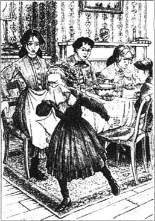
“今天是6月1号，金一家明天就要去度假了，”麦格说，“我有三个月的自由时间！”
“今天马奇姑妈也去度假了，”琼说，“生活真好啊！”
“你们整个假期做什么呢？”艾米问。
“我会睡懒觉，什么也不做。”麦格答道。
“我有许多的书要读。”琼说。
“咱们什么功课都不做了吧，白丝，”艾米说，“咱们所有时间都用来玩和休息，就像琼和麦格要做的那样。”
“如果妈妈不介意我就同意。”白丝说。
马奇太太同意了这个计划，并说她们可以试一个星期。
“但是，”她补充道，“我想到星期六晚上你们就会发现只有玩乐没有工作的生活就像只有工作没有玩乐一样糟糕。”
第二天，麦格10点钟才露面，独自用早餐。这是一顿孤寂的早餐，房间乱糟糟的，因为白丝没有整理过。
琼和罗瑞到河边去了，然后坐在一棵苹果树上看书。白丝开始整理她的橱柜，可她感到累了，只做了一半就不做了。她来到她的钢琴旁，为她不用洗杯子和盘子而高兴。艾米坐在花园里画画，希望有人能看到她并夸奖她的画。可没有一个人出现，于是她就去散步，途中遇到了雨，湿淋淋地回到家。
喝茶时，每个人都说那天过得很愉快，只是有些出乎寻常地长。麦格下午去买东西了，可她现在却觉得她不喜欢她买的衣服。琼因为看书时间太长，头疼起来。白丝在她的橱柜里什么都找不到了。雨把艾米的衣服弄得太湿，第二天她不能穿那件衣服去参加凯特·布朗家的聚会了。
马奇太太听着，面带微笑，什么都没说。
因为没有事情做，那个星期看起来越来越长，到了星期五孩子们都很高兴这一切就要结束了。然后马奇太太放了海娜一天假，当星期六早晨孩子们起床时，发现没有了早餐，没有了炉火，妈妈也没在等她们。
“发生了什么事？”琼说。
麦格跑上楼，然后又跑下来跟大家说妈妈呆在她的房间里休息。“她说今天我们得自己照顾自己。”麦格说。
“好啊，我想做点事。”琼说。
私下里，她们都很高兴又有些有用的事情可以做了。白丝和艾米把杯子和盘子摆到桌上，琼和麦格做早餐，然后麦格把一些茶和一个鸡蛋拿到楼上给母亲。茶太浓了，鸡蛋烧糊了。马奇太太没有抱怨，但之后她对自己笑了。
琼决定请罗瑞来吃晚餐。“有肉、蔬菜和足够的土豆，”她告诉麦格，“我们还可以吃草莓，然后喝咖啡。”母亲说她一点也不在乎，因为她要出去吃晚餐。
琼尽了最大努力，可土豆的中间还是硬的，蔬菜做得时间太长，变烂了，肉也给烧黑了。草莓还不能吃，她又把盐当成糖撒在了上面！不幸的是，直到罗瑞开始吃草莓这情况才被发现。他装做一切无恙，可艾米吃了一勺后从桌边跑开了。
“怎么啦？”琼问。
麦格和罗瑞告诉了她。“噢，不！”琼说。然后她看见罗瑞笑了，她也开始笑。旋即每个人都和她一起笑了。
“多糟的一天啊！”当她们把一切收拾走后，琼说。
马奇太太很晚才回来。“你们喜欢这个只有玩乐没有工作的星期吗，孩子们？你们是不是还想再来一个这样的星期？”她问。
“我不要了！”琼说。
“我也不要了！”其他人都喊道。
“妈妈，你是不是出门去就想看看我们会怎么办？”麦格问。
“是的，”马奇太太说，“我想让你们知道舒适依赖于我们大家互相帮助，不要只想到自己。有时间玩乐，也有时间工作，使每天既有用又愉快不是很好吗？”
“噢，是的，妈妈，是的！”孩子们说。
几天之后，四个女孩子和罗瑞及他的家庭教师布鲁克先生，还有其他几个年轻人一起去野餐，萨丽·加迪那和她的英国朋友凯特·瓦格小姐也去了。那天阳光灿烂，他们在一个小山坡上的一些树下野餐。
餐后，大部分年轻姑娘和小伙子都去做游戏了，可凯特小姐却坐在一棵树下开始画画。麦格看着，布鲁克先生躺在她身旁的草地上，拿着一本书，但他并没有在看。
“真希望我会画画。”麦格说。
“你为什么不学呢？”凯特小姐问。她比其他的女孩稍大点，并且是最时髦的姑娘。
“我没时间，”麦格说，“我有工作，给一家四个孩子教课。”
“噢。”凯特小姐说，看上去很吃惊。她什么也没说，可从她脸上的表情可以看出她认为做家庭教师仅仅比做仆人好一些。麦格的脸很快变红了？
“在美国，年轻的小姐喜欢自己工作挣钱，”布鲁克先生很快地说，“她们不指望别人给她们掏钱。”
“是这样。”凯特小姐冷冷地说。一会儿，她拿起她的画走开了。
“没有其他地方像美国这样适合我们工作的人了，麦格小姐。”布鲁克先生笑着说。他棕色的眼睛温和地看着麦格，她也向他笑笑。
“我真希望像你一样喜欢教书。”她说。
“如果你教的是罗瑞你就会喜欢教书的，”布鲁克先生说，“明年他要去上大学，我会感到很遗憾。可然后我就要去当兵了。”
“我认为每个年轻人都想当兵，”麦格说，“可这对待在家里的人来说是很难的。”
“我没有家，也没有许多朋友在乎我的死活。”布鲁克先生伤感地说。
“罗瑞和他祖父会在乎的，”麦格说，“如果你发生什么事，我们大家都会很悲伤的。”
“谢谢你。”布鲁克先生说，立刻高兴起来。
9．Secrets
9
Secrets
One October afternoon, Jo caught a bus into the town and stopped outside a building in one of the busy streets. She went in, looked up the stairs and, after a minute, ran out again. She did this several times, to the great amusement of a young man who was watching from the opposite side of the road. But the fourth time, Jo gave herself a shake and walked up the stairs.
The young man crossed the road and waited. It was Laurie. Ten minutes later, Jo came running out, but did not look pleased to see him.
'What are you doing here?' she said.
'I'm waiting to walk home with you,' he said. 'I've a secret to tell you, but first you must tell me yours.'
'You won't say anything at home, will you?' said Jo.
'Not a word,' promised Laurie.
'I've left two of my stories with a newspaper man,' said Jo, 'but I'll have to wait until next week before I know if they will be printed.'
'Miss March, the famous American writer!' said Laurie, throwing his hat into the air and catching it.
Jo looked pleased. 'Now, what's your secret?'
'You remember Meg lost a glove at the picnic?' said Laurie. 'Well, I know where it is.'
'Is that all?' said Jo, looking disappointed.
'Wait until I tell you where it is,' he said.
'Tell me then,' said Jo.
Laurie whispered three words in Jo's ear.
She stared at him, looking both surprised and displeased. 'How do you know?'
'I saw it.'
'Where?' asked Jo.
'Pocket. What's wrong, don't you like it?'
'Of course not. It's stupid! What would Meg say if she knew?'
'You mustn't tell anyone,' said Laurie.
'I didn't promise,' Jo reminded him.
'I thought you would be pleased,' he said.
'Pleased at the idea of someone coming to take Meg away?' said Jo. 'No, thank you.'
She ran off down the hill, but Laurie came after her and reached the bottom first. She came up behind him, her face red and her hair blowing in the wind.
'That was fun!' she said, forgetting her crossness in the enjoyment of a good run.
At that moment, someone passed by, then stopped and looked back. It was Meg.
'What are you doing here?' she said when she saw Jo. 'You've been running, haven't you? Jo, when will you start to behave like a young lady?'
'Don't make me grow up yet, Meg,' said Jo, looking sad. 'It's hard enough having you change so suddenly.'
Meg was growing into a woman, and Laurie's secret made Jo realize that Meg would leave home one day, perhaps soon.
Two Saturdays after Jo had gone secretly into town, Meg saw Laurie chasing Jo all over the garden before the two of them fell on the grass, laughing and waving a newspaper.
'What can we do with that girl?' said Meg. 'She never will behave like a young lady.'
Minutes later, Jo came in with the newspaper. She sat down and began to read it.
'Are you reading anything interesting?' asked Meg.
'Only a story,' said Jo.
'Read it aloud,' said Amy. 'It may amuse us.'
Jo began to read very fast, and the girls listened. It was a love story about two people called Viola and Angelo, and most of the characters died in the end. But the girls enjoyed it, and Meg even cried a little at the sad parts.
'Who wrote it?' asked Beth, watching Jo's face.
Jo put down the newspaper. 'I did,' she said, her eyes bright and shining.
'You?' said Meg, surprised.
'It's very good,' said Amy.
'I knew it!' said Beth. She ran across and put her arms around her sister. 'Oh, Jo, I am so proud!'
And how proud Mrs March was when she was told.
Everyone began to speak at the same time. 'Tell us all about it.' 'How much did you get for it?' 'What will Father say?' 'Won't Laurie laugh!'
So Jo told them all about it, and that evening there was no happier or prouder family than the Marches.
secret n. 秘密。
several adj. three or more. 几个。
opposite adj. entirely different. 相反的。
print v. 印刷。
newspaper man journalist. 新闻工作者。
disappointed adj. sad at not getting what was hoped for. 失望的。
pocket n. 口袋。
remind v. cause to remember. 提醒。
behave v. act; conduct oneself. 行为；举止。
perhaps adv. possibly. 也许。
chase v. run after in order to capture. 追捕。
aloud adv. in a voice loud enongh to be heard. 出声地；高声地。
proud adj. having or showing a proper pride or dignity. 感到光荣或得意的。
秘密
9 秘密
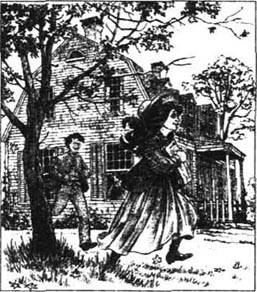
10月的一天下午，琼乘公共汽车到了镇上，在座落在一条繁华大街上的一幢楼前停了下来。她走了进去，向楼梯上望了望，片刻，又跑出来。她这样反复了好几次，使得在街对面看着她的一个年轻人感到很有意思。可是第四次，琼鼓了鼓勇气，走上了楼梯。
那个年轻人过了马路等候着。那是罗瑞。10分钟之后，琼跑了出来，可看上去不太高兴见到他。
“你在这儿干什么？”她问道。
“我在等着跟你一起回家，”他答道，“我有个秘密要告诉你，可你得先告诉我你的秘密。”
“你什么也不会对家里人讲，是吗？”琼问。
“一个字也不说。”罗瑞发誓说。
“我给一个报纸编辑留下了两篇我写的故事，”琼说，“可我还得等到下个星期才会知道它们会不会被发表。”
“马奇小姐，著名的美国作家！”罗瑞说道，一边把他的帽子扔到空中，然后又接住。
琼看上去高兴起来。“那么你的秘密是什么？”
“你还记得麦格野餐的时候丢了一只手套吗？”罗瑞说，“哎，我知道它在哪儿。”
“就这个吗？”琼说，看上去挺失望。
“别急呀，等我告诉你它在哪儿。”他说。
“那告诉我吧。”琼说。
罗瑞在琼耳边小声念叨了三个字。
她盯着他，看上去又惊又怒。“你怎么知道的？”
“我看见的。”
“在哪儿？”琼问。
“兜里。怎么了，你不喜欢这个消息吗？”
“当然不。这太愚蠢了！麦格知道了会说什么？”
“你谁也不许告诉。”罗瑞说。
“我没发过誓。”琼提醒他说。
“我以为你会高兴呢。”他说。
“为有人来要带麦格走而感到高兴吗？”琼说，“不，谢谢。”
她跑下山坡，可罗瑞追上了她并在她之前到达了坡底。她从他后面走过来，脸红红的，头发飘在风中。
“这真有意思！”她说，她已因为奔跑的快乐而忘记了她的不愉快。
就在那时，有人从他们身旁经过，然后停了下来朝后看。那是麦格。
“你在这儿干什么？”她看到琼，问道，“你刚才奔跑来的，是吗？琼，你什么时候才能像个年轻的淑女？”
“别让我长大，麦格，”琼说，看上去挺伤感。“看见你突然的改变就够难的了。”
麦格正在成长为一个妇人，罗瑞的秘密使琼意识到麦格有一天会离开家，也许很快。
琼悄悄去了镇里两个星期后，麦格看到罗瑞满花园地追逐琼，然后两人都倒在草地上，笑着舞动着一张报纸。
“我们该把那个女孩子怎么办呢，”麦格说，“她永远也不会像个淑女。”
几分钟以后，琼手中拿着报纸走了进来。她坐下来开始读那份报。
“你是在读些有趣的事吗？”麦格问。
“只是个故事。”琼答道。
“大声地读，”艾米说，“它没准会逗我们开心。”
琼开始很快地读，孩子们倾听着。那是个关于两个名叫维奥拉和安杰洛的人的爱情故事，大多数人物在结尾时都死去了。可女孩子喜欢它，麦格甚至在听到伤感的段落时还哭了。
“谁写的？”白丝问道，看着琼的脸。
琼把报纸放下。“我写的。”她说，她的眼睛亮闪闪的。
“你？”麦格吃惊地说。
“这太好了。”艾米说。
“我就知道！”白丝说。她跑过去用双臂搂住她的姐姐，“噢，琼，我真骄傲！”
当马奇太太被告知这件事时，她也特别骄傲。
众人七嘴八舌地同时说开了：“告诉我们这一切吧。”“为这篇文章你得了多少钱？”“爸爸会怎么说？”“怪不得罗瑞笑呢！”
于是琼就把一切讲给她们听，那天晚上，没有比马奇一家更快乐的家庭了。
10．A telegram
10
A telegram
Mrs March, the girls and Laurie were sitting together on a dull November afternoon when Hannah hurried into the room with a telegram. Mrs March read it, then dropped it to the floor, her face white and her hands shaking. Jo picked up the telegram and read it to the others in a frightened voice. Mrs March: Your husband is very ill. Come at once. S. Hale, Blank Hospital, Washington.
The girls moved close to their mother. All their happiness had disappeared in a moment.
'I shall go at once,' said Mrs March, 'but it may be too late. Oh, my children!'
For several minutes, there was only the sound of crying, then Hannah hurried away to get things ready for the long journey.
'Where's Laurie?' Mrs March asked.
'Here,' said the boy. 'Oh, let me do something!'
'Send a telegram and say that I'll come at once,' said Mrs March. 'The next train goes early in the morning. Now, I must write a note to Aunt March. Jo, give me that pen and paper.'
Jo knew that the money for the journey must be borrowed from Aunt March, and she too wanted to do something—anything—to help her father.
Laurie went off to take the note to Aunt March and to send the telegram. Jo went to fetch some things from the shops, and Amy and Meg helped their mother to get ready.
'Father will need good food and wine to help him get better, and there won't be much at the hospital,' said Mrs March. 'Beth, go and ask Mr Laurence for a couple of bottles of wine. I'm not too proud to beg for Father.'
Mr Laurence came back with Beth. He offered to go with Mrs March, but she wouldn't let the old gentleman make the long, tiring journey, although he could see that she would like to have somebody with her. He went away again, saying, 'I'll be back.'
Soon after, Meg saw Mr Brooke by the door.
'I'm very sorry to hear your news, Miss March,' he said gently. 'Mr Laurence and I think it will be a good idea if I travel with your mother.'
'How kind you all are!' said Meg. 'It will be so good to know that there is someone to take care of Mother. Thank you very much!' She put out her hand and smiled gratefully up into his warm brown eyes.
Laurie came back with a letter and money from Aunt March, but Jo did not return. It was late afternoon when she came walking in and gave her mother some money.
'That's to help make Father comfortable and to bring him home,' she said.
'Twenty-five dollars!' said Mrs March. 'My dear, where did you get it?'
Jo took off her hat.
'Your hair, your beautiful hair!' cried Amy.
All Jo's lovely, thick, long hair was cut short.
'Jo, how could you?' cried Meg.
'My dear girl, there was no need for this,' said Mrs March.
'She doesn't look like my Jo, but I love her dearly for doing it!' said Beth, and began to cry.
'Don't cry, Beth,' said Jo. 'I wanted to do something for Father, and selling my hair was the only thing I could think of doing. I'II soon have a curly head again, which will be short and easy to keep tidy.'
But later, when Amy and Beth were asleep and Meg was lying awake, she heard Jo crying.
'Are you crying about Father, Jo?' she asked.
'No, not now. It's my hair,' cried Jo. 'I'd do it again, if I could. But I did love my hair, and the selfish bit of me is making me cry. Don't tell anyone. I'll be all right in the morning.'
During the days after their mother and Mr Brooke went away, Meg and Jo went back to their jobs, and Beth and Amy helped Hannah to keep the house tidy. Everyone tried very hard to be good and hard-working and helpful.
News of their father came through, at first telling them he was dangerously ill, but then saying he was slowly getting better.
telegram n. message sent by telegraphy. 电报。
hurry v. move or do something quickly or too quickly. 匆忙；赶快。
shake v. move from side to side, up and down. 抖动；摇动。
a couple of several. 几个。
wine n. alcoholic drink made from grapes. 葡萄酒。
beg v. ask for. 乞求。
travel v. make a journey or journeys. 旅行。
take off remove. 脱掉。
helpful adj. giving help. 有益的。
come through arrive. 到达。
一封电报
10 一封电报
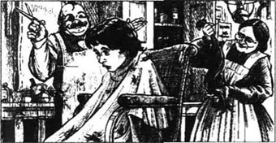
11月一个多云的下午，马奇太太、女孩子们和罗瑞正围坐在一起，海娜拿着一封电报匆匆走进屋来。马奇太太读了电报，然后把它掉落在地上，脸色煞白，双手颤抖。琼把电报拾起来，用惊恐的声音读给其他人听。“马奇太太，你的丈夫病得很重。马上来。华盛顿圣黑尔布兰克医院。”
女孩子们靠近母亲。她们的快乐刹时消失了。
“我得马上去，”马奇太太说，“可也许太迟了。噢，孩子们！”
几分钟之内，只有啼哭的声音，然后海娜赶快去为这漫长的旅程收拾行装。
“罗瑞在哪？”马奇太太问。
“在这儿，”那男孩说，“噢，让我做点事吧！”
“去发封电报说我马上就来，”马奇太太说。“下一班火车清晨开出。现在我得给马奇姑妈写个便条。琼，给我拿支笔，还有纸。”
琼知道这次旅行的钱一定得从马奇姑妈那儿借，她也想为帮她父亲做些事，任何事都行。
罗瑞走了，去给马奇姑妈送条子和发电报。琼去商店买东西，艾米和麦格帮母亲做准备。
“爸爸一定需要好的食品和酒帮他恢复健康，医院里肯定不会有什么，”马奇太太说，“白丝，去向劳伦斯先生要几瓶酒。我可没有傲气到不能为你们父亲乞讨的地步。”
劳伦斯先生和白丝一起回来了。他表示要和马奇太太一起去，可她不让老先生做那么漫长疲劳的旅行，虽然他看得出她希望能有人陪她一起去。他再一次走开，说着：“我就回来。”
一会儿工夫，麦格看见布鲁克先生站在门口。
“我听到你们的消息感到很难过，马奇小姐，”他轻柔地说，“劳伦斯先生和我都觉得，如果让我和你母亲一起去会是个好主意。”
“你们真好！”麦格说，“能有个人照顾母亲简直太好了！非常感谢！”她伸出手，望着他那温和的棕色眼睛，感激地笑了。
罗瑞回来了，带来一封信和马奇姑妈的钱，可琼还没回来。下午很晚的时候，她回来了，交给母亲一些钱。
“把这钱拿去让爸爸感到舒适些，再把他带回家来。”她说。
“25块钱！”马奇太太说，“我亲爱的，你从哪儿弄来的？”
琼把帽子摘了下来。
“你的头发！你漂亮的头发！”艾米喊道。
琼那一头漂亮的、又浓密又长的头发不见了。
“琼，你怎么能这样做？”麦格叫道。
“我亲爱的孩子，你不必这么做。”马奇太太说。
“她看起来不像我的琼了，可我因为她这样做而爱她！”白丝说道，随即开始哭起来。
“别哭了，白丝，”琼说，“我想为爸爸做点什么，卖掉我的头发是我唯一能想得出来的事，我不久就会又有一头卷发了，又短又容易梳理。”
可过一会儿，当艾米和白丝都睡着了，麦格躺着却睡不着，她听到琼在哭。
“你是在为爸爸哭吗，琼？”她问。
“不，现在不是。我是为我的头发，”琼哭道，“如果我能够，我还会再做一次的，可我确实很爱我的头发，我自私的一面在使我哭泣。别告诉别人。我早晨就会好的。”
她们的母亲和布鲁克先生走后的日子里，麦格和琼回去工作了，白丝和艾米帮海娜整理房子。每个人都非常努力，想要做好，想要勤奋工作，想要帮助别人。
关于父亲的消息传来，一开始说他病情很危险，可后来说他正在慢慢地好转。
11．Beth
11
Beth
Ten days after their mother went away, Beth came home late after one of several visits to a sick baby at the Hummels' house. She went straight to her mother's room and shut herself inside. Half an hour later, Jo found her sitting there, looking very ill.
'Beth, what's the matter?' cried Jo.
Beth put out a hand to keep her away. 'You've had scarlet fever, haven't you?' she said.
'Years ago, when Meg did,' said Jo. 'Why?'
'Oh, Jo! Mrs Hummel's baby is dead,' said Beth. 'It died in my arms before Mrs Hummel got home.'
'My poor Beth, how awful for you!' said Jo, putting an arm around her sister. 'What did you do?'
'I just sat and held it until Mrs Hummel came with the doctor. He looked at Heinrich and Minna who were also feeling sick. "It's scarlet fever," he said. Then he told me to come home and take some medicine quickly or I would catch it, too.'
'I'll fetch Hannah,' said Jo.
'Don't let Amy come,' said Beth. 'She hasn't had it, and I don't want to give it to her.'
It was decided that Amy must go to Aunt March's house, so Laurie took her there. Poor Amy did not like this plan at all and only agreed to go when Laurie said he would visit her every day to bring her news of Beth.
When Laurie got back, he asked Jo and Meg if he ought to send a telegram to Mrs March.
'Hannah says Mother can't leave Father and would only worry,' said Meg. 'She says Beth won't be sick long, and that she knows what to do, but it doesn't seem right.'
Mr Laurence was not allowed to see Beth, and Meg felt unhappy writing letters to her mother saying nothing about Beth's illness. Jo nursed Beth night and day, but the time came when Beth did not know her and called for her mother. Jo was frightened, and Meg begged to be allowed to write the truth, but Hannah said there was no danger yet. Then a letter came saying that Mr March was worse and could not think of coming home for a long time.
How dark the days seemed. How sad and lonely. The sisters worked and waited as the shadow of death lay over the once happy home. It was then that Meg realized how rich she had been in the things which really mattered—love, peace, good health. And Jo, watching her little sister, thought about how unselfish Beth always was—living for others and trying to make home a happy place for all who came there. Amy, sad and lonely at Aunt March's house, just wanted to come home so that she could do something to help Beth.
On the first day of December, the doctor came in the morning. He looked at Beth, then said quietly, 'If Mrs March can leave her husband, I think she should come home now.'
Jo threw on her coat and ran out into the snow to send a telegram. When she arrived back, Laurie came with a letter saying that Mr March was getting better again. This was good news, but Jo's face was so unhappy that Laurie asked, 'What is it? Is Beth worse?'
'I've sent for Mother,' said Jo, beginning to cry. 'Beth doesn't know us anymore.'
Laurie held her hand and whispered, 'I'm here, Jo. Hold on to me. Your mother will be here soon, and then everything will be all right.'
'I'm glad Father is better,' said Jo. 'Now Mother won't feel so bad about coming home.'
'You're very tired,' said Laurie. 'But I'll tell you something to cheer you up better than anything.'
'What is it?' said Jo.
Laurie smiled. 'I sent a telegram to your mother yesterday, and Mr Brooke answered that she'd come at once. She'll be here tonight and everything will be all right!'
Jo threw her arms around him. 'Oh, Laurie! Oh, Mother! I am so glad!' She did not cry again, but held on to her friend. He was surprised, but he smoothed her hair and followed this with a kiss or two.
Jo pushed him gently away. 'Oh, don't! I didn't mean—!'
'I enjoyed it!' laughed Laurie, then went on, 'Grandfather and I thought your mother ought to know. She wouldn't forgive us if Beth—well, if anything happened. Her train will be in at two o'clock in the morning, and I'll meet her.'
All that day, the snow fell and the hours went slowly by. The doctor came, then said he would come back after midnight when he expected there to be some change in Beth's condition, for better or worse. Hannah fell asleep in a chair beside Beth's bed. Mr Laurence waited downstairs, while Laurie lay on the floor pretending to rest. The girls just waited, unable to sleep.
At twelve o'clock, a change seemed to pass over Beth's face. Hannah slept on, but the girls saw the shadow which seemed to fall upon the little bed. An hour went by and Laurie left quietly for the station.
At two o'clock, Jo was standing at the window, watching the snow. She heard something and turned to see Meg kneeling beside her mother's chair. A cold feeling of fear passed over Jo. 'Beth is dead,' she thought.
She ran to the bed. The pain had gone from Beth's face, and now there was a look of peace instead. Jo kissed her and softly whispered, 'Goodbye, Beth, goodbye!'
Hannah woke up and looked at Beth. 'The fever's gone!' she cried. 'She's sleeping and breathing easily!'
The doctor came soon after. 'I think she'll be all right,' he said. 'Keep the house quiet and let her sleep.'
Meg and Jo held each other close, their hearts too full for words. Beth was lying as she used to, with her cheek on her hand, and breathing quietly.
'I wish Mother would come now,' whispered Jo.
And a moment later, they heard the sound of the door below, a cry from Hannah, then Laurie's happy voice saying, 'Girls, she's come! She's come!'
dangerously adv. likely to cause danger. 危险地。
sick adj. unwell, ill. 患病的。
straight adj. without a bend or curve. 直的。
scarlet fever 猩红热。
medicine n. 药。
ought to should. 应该。
allow v. permit. 允许。
truth n. that which is true. 真相；事实。
shadow n. area of shade, dark shape, thrown on the ground. 阴影。
glad adj. pleased. 高兴的。
tired adj. weary in body or mind. 疲倦的。
smooth v. make smooth. 使光滑。
kiss v. touch with the lips to show affection or as a greeting. 吻。
happen v. take place. 发生。
midnight n. 12 o'clock at night. 午夜。
condition n. the present state of things. 状况。
softly adv. in a soft manner. 柔软地；轻轻地。
白丝
11 白丝
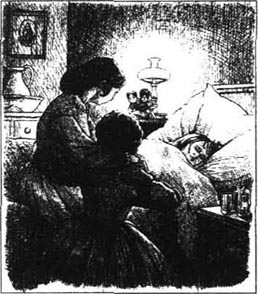
母亲离开10天以后，白丝很晚才回家，她已几次去哈梅尔家看望一个生病的婴儿。她径直走进母亲的房间，把自己关在里面。半个小时以后，琼发现她坐在那儿，看上去病得很厉害。
“白丝，怎么了？”琼叫道。
白丝伸出一支手，让她离远点。“你得过猩红热，是不是？”她说。
“几年以前得过，那是麦格得病时传染了我，”琼说，“怎么了？”
“噢，琼！哈梅尔的婴儿死了，”白丝说，“它在哈梅尔太太回家前死在我怀里。”
“我可怜的白丝，这对你太糟了！”琼说，用一只胳膊搂住她的妹妹。“你做了什么？”
“我就那么坐在那儿抱着它，直到哈梅尔太太带着医生来。他看看海因里奇和米娜，他们也觉得不舒服。‘是猩红热，’他说。然后他告诉我回家来赶快吃点药，要不然我也会得病的。”
“我去找海娜。”琼说。
“别让艾米来，”白丝说，“她没得过，我不想传染给她。”
大家决定艾米必须去马奇姑妈家，于是罗瑞把她带到那儿。可怜的艾米一点也不喜欢这个主意，直到罗瑞说他每天都会去看她，带给她白丝的消息，她才同意去。
罗瑞回来的时候，问琼和麦格他是不是应该给马奇太太发封电报。
“海娜说妈妈不能离开爸爸，只会为这事着急担心，”麦格说，“她说白丝不会病很久，她知道该怎么做，可这好像不对。”
他们不准劳伦斯先生来看望白丝。麦格为给妈妈的信中不能提白丝的病感到很不高兴：琼日夜照看白丝，可不久白丝不认识她了，喊叫着要母亲。琼害怕了，麦格恳求允许她把真情写在信里，可海娜说还不会有危险。之后来了一封信，说马奇先生病情加重，在很长一段时间内她还不能考虑回家。
那些日子看起来多阴暗哪。那么悲伤和孤独，女孩子们工作着，等待着死亡的阴影笼罩着这个一度欢乐的家。就在那时，麦格意识到她曾经多么富有，那些东西才是真正应该在意的——爱，和平，健康。琼看着她的妹妹，想起白丝一直是那么无私——为别人而生活，努力为来到家里的人把家变成一个快乐的地方。艾米在马奇姑妈家又伤心又孤单，只想回家为白丝帮点忙。
12月的第一天，医生一早就来了．他看了看白丝，然后缓缓地说：“如果马奇太太能离开她的丈夫，我认为她现在就应该回家来。”
琼穿上外衣跑到外面的雪地里，去发电报。当她回来时，罗瑞带来一封信，说马奇先生又有好转了。这是好消息，可琼的脸上看上去是那么不开心，于是罗瑞问：“怎么了？是不是白丝病重了？”
“我已经叫妈妈回来了，”琼说道，开始哭泣起来，“白丝已经不认识我们了。”
罗瑞握住她的手，小声说：“我在这儿，琼。有我呢。你妈妈就会回来了，然后所有的事都会好了。”
“我很高兴爸爸好些了，”琼说，“现在妈妈回到家里心情也不会很糟。”
“你很累了，”罗瑞说，“可我要告诉你一些事使你高兴起来。”
“是什么？”琼问。
罗瑞笑了。“我昨天就已发了一封电报给你妈妈，布鲁克先生说她会马上回来。她今天晚上就会回来，一切都会好的！”
琼用双臂搂住他。“噢，罗瑞！噢，妈妈！我太高兴了！”她不再哭了，可还是搂着罗瑞。他很吃惊，可他理了理她的头发，然后吻了她一两下。
琼轻轻把他推开。“噢，别这样，我并不是说想——！”
“我很喜欢！”罗瑞笑了，然后继续说，“祖父和我认为你母亲应该知道。万一白丝——哦，如果发生什么事，她不会饶恕我们的。她乘坐的火车凌晨2点到，我去接她。”
那一整天，下着雪，时间缓慢地过去。医生来了，然后说他午夜以后再来，那时白丝的情况会有变化，变好或变坏。海娜坐在白丝床边的椅子上睡着了，劳伦斯先生等在楼下，罗瑞躺在地上假装休息。女孩子们只有等待，她们睡不着。
12点钟，似乎白丝脸上有了变化。海娜继续睡着，可女孩子们却似乎看到降临到那张小床上的阴影。一小时过去了，罗瑞安静地离开去了车站。
2点钟，琼站在窗边看雪。她听到了一点声音，转过身来看见麦格跪在妈妈的椅子旁边。一种冰冷的恐惧感传遍琼的全身。“白丝死了。”她想。
她朝床跑过去。痛苦已从白丝脸上消失，取而代之的是一种安详的表情。琼吻了吻她，轻柔地低语：“再见，白丝，再见！”
海娜醒了过来，看了看白丝。“热退了！”她喊道，“她睡着了，呼吸很顺畅！”
医生不久就来了。“我想她会好的，”他说，“让这房子保持安静，叫她睡觉。”
麦格和琼紧紧地拥抱，她们的心情难以言表。白丝就像她从前一样躺着，手托着脸颊，平静地呼吸着。
“我希望妈妈能现在就回来。”琼低声说。
片刻之后，他们听到了楼下的门声，海娜喊了一声，然后是罗瑞快乐的声音说：“女孩们，她来了，她来了！”
12．Love and Mr Brooke
12
Love and Mr Brooke
When Beth woke from her long sleep, she looked into her mother's face and smiled. Then she slept again, but Mrs March held on to her daughter's thin little hand.
Hannah made breakfast while Meg and Jo listened as their mother told them about their father's health, and Mr Brooke's promise to stay with him. Then Meg and Jo closed their tired eyes and were able to rest at last.
Laurie went to give the good news to Amy at Aunt March's house. He, too, was tired after the long night, and just managed to finish telling his story before he fell asleep in the chair.
Amy began to write a short letter to her mother, but before she could finish it, she saw Mrs March coming towards her aunt's house! Amy ran to meet her.
There were probably many happy little girls in the city that day, but Amy was the happiest of them all as she sat on her mother's knee. 'I've been thinking a lot about Beth,' she said. 'Everyone loves her because she isn't selfish. People wouldn't feel half so bad about me if I was sick, but I'd like to be loved and missed. I'm going to try and be like Beth as much as I can.'
Her mother kissed her. 'I'm sure you will succeed,' she said. 'Now I must go back to Beth. Be patient, little daughter, and we'll soon have you home again.'
That evening, while Meg was writing to her father, Jo went upstairs to Beth's room and found her mother beside the bed, as the little girl slept.
'I want to tell you something, Mother,' said Jo.
'Is it about Meg?' said Mrs March.
'How quickly you guessed!' said Jo. 'Yes, it's about her. Last summer, Meg lost one of her gloves at the Laurences' picnic, and later Laurie told me that Mr Brooke had it, and kept it in his coat pocket. It fell out once, and Laurie saw it. Mr Brooke told Laurie that he liked Meg but was afraid to tell her because she was so young and he was so poor. Isn't it all awful?'
'Do you think Meg likes and cares about him?' asked Mrs March, with a worried look.
'I don't know anything about love!' said Jo.
'Do you think she's not interested in John?' said Mrs March.
'Who?' said Jo, staring.
'Mr Brooke,' said her mother. 'I call him John because we became good friends at the hospital.'
'Oh, dear!' said Jo. 'He's been good to Father, and now you'll let Meg marry him, if she wants to.'
'My dear, don't be angry,' said Mrs March. 'John told us quite honestly that he loved Meg, but said he would earn enough money for a comfortable home before he asked her to marry him. He wants very much to make her love him if he can. He's an excellent young man, but your father and I will not agree to Meg marrying before she is twenty.'
'I want her to marry Laurie, and be rich,' said Jo.
'I'm afraid Laurie isn't grown-up enough for Meg,' said Mrs March. 'Don't make plans, Jo. Let time and their own hearts bring your friends together.'
Meg came in with the letter for her father.
'Beautifully written, my dear,' said her mother, looking at the letter. 'Please add that I send my love to John.'
'Do you call him John?' said Meg, smiling.
'Yes, he's been like a son to us and we are very fond of him,' said Mrs March, watching her daughter closely.
'I'm glad of that, because he's so lonely,' was Meg's quiet answer. 'Goodnight, Mother dear.'
Mrs March kissed her gently. 'She does not love John yet,' she thought, 'but she will soon learn to.'
health n. condition of the body or the mind. 健康状况。
asleep adj. sleeping. 睡着（的）。
finish v. bring or come to an end. 结束。
patient adj. having or showing patience. 有耐性的。
guess v. 猜想。
glove n. covering of leather, knitted wool, for the hand. 手套。
care about feel interest, anxiety or sorrow. 感到关切、操心或忧虑。
be fond of be full of love for. 喜欢。
gently adv. in a gentle manner. 和善地；温和地。
爱和布鲁克先生
12 爱和布鲁克先生
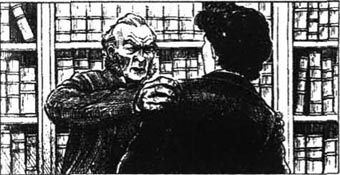
当白丝从她的长觉中醒来，她望着母亲的脸，笑了：然后她又睡去了，可马奇太太依旧握着女儿瘦瘦的小手。
海娜做早餐的时候，麦格和琼听她们的母亲讲述父亲的健康状况，她还说布鲁克先生答应和他呆在一起。然后麦格和琼合上疲劳的眼睛，终于能休息了。
罗瑞去把好消息告诉在马奇姑妈家的艾米，经过那个长夜，他也太累了，刚一讲完他的故事，他就在椅子上睡着了。
艾米开始给母亲写一封短信，可还没等写完，她就看见马奇太太正朝马奇姑妈家走来！艾米跑过去迎接她。
那天城里大概有许多幸福的女孩，可当艾米坐在母亲的膝头上时，她就是她们中最幸福的一个。“我一直在惦念白丝，”她说，“每个人都喜欢她，因为她不自私。如果是我病了，大家一定不会有这个一半的感觉，可我希望被爱、被惦念。我一定努力像白丝那样。”
她的母亲吻了她。“我肯定你会成功的，”她说，“现在我得回到白丝那儿去。耐心点，小女儿，我们不久就让你回家。”
那天晚上，在麦格给父亲写信的时候，琼走上楼，来到白丝的房间，她发现母亲正在床边，白丝睡着了。
“我想告诉你些事，妈妈。”琼说。
“是关于麦格的吧？”马奇太太问。
“你猜得真快！”琼说，“是的，是关于她。夏天，麦格在劳伦斯家的野餐会上丢了一只手套，后来罗瑞告诉我布鲁克先生拿了，把它放在他的外套口袋里。有一次它掉了出来，罗瑞看到了。布鲁克先生告诉罗瑞他喜欢麦格，却不敢告诉她，因为她太年轻而他又那么穷。这是不是很糟糕？”
“你觉得麦格喜欢他、在乎他吗？”马奇太太面带忧虑地问。
“我对爱一无所知！”琼说。
“你认为她对约翰不感兴趣？”马奇太太问。
“谁？”琼瞪着眼问。
“布鲁克先生，”她母亲说，“我管他叫约翰，因为我们在医院成了好朋友。”
“噢，天哪！”琼说，“他对爸爸好，现在你又让麦格嫁给他，如果她想的话。”
“我亲爱的，别生气，”马奇太太说，“约翰非常诚恳地告诉我们说他爱麦格，可他说他要等到赚了足够的钱建一个舒适的家时才向麦格求婚。他非常想尽他所能让她爱他。他是个很出色的年轻人，可你爸爸和我在麦格20岁之前不会同意她结婚。”
“我想要让她嫁给罗瑞，变得富有。”琼说。
“恐怕罗瑞对麦格来说还没长大，”马奇太太说，“别做任何打算，琼。让时间和他们自己的心把你的朋友们带到一起。”
麦格走进来，手里拿着给她父亲的信。
“写得很棒，亲爱的，”她母亲看着信说，“请加上我带给约翰我的爱。”
“你管他叫约翰吗？”麦格笑着问。
“是的，他就像个儿子那样对我们，我们都很喜欢他。”马奇太太说，同时仔细地观察着女儿。
“我很高兴是那样，因为他太孤单了。”麦格很安静地答道，“晚安，亲爱的妈妈。”
马奇太太温柔地吻了她。“她还不爱约翰，”她想，“可她很快就会学会的。”
13．Laurie makes trouble and Jo makes peace
13
Laurie makes trouble and Jo makes peace
Laurie quickly realized that Jo was keeping a secret which she refused to tell him, but he guessed the secret was about Meg and Mr Brooke, and was annoyed that his tutor had said nothing. He began to make some private plans of his own.
Meg, meanwhile, was busy getting things ready for her father's return, but a change suddenly seemed to come over her. For a day or two, she jumped when she was spoken to, and there was a worried look on her face.
Then a letter arrived for her, and a few minutes later Mrs March and Jo saw Meg staring at it with a frightened face.
'My child, what is it?' said Mrs March.
'It's a mistake—he didn't send it. Jo, how could you do it?' Meg hid her face in her hands and cried.
'Me? I've done nothing,' said Jo. 'What's she talking about?'
Meg pulled another letter from her pocket and threw it at Jo. 'You wrote it, and that bad boy helped you. How could you be so cruel and mean to us both?'
Jo and her mother read the letter which had been in Meg's pocket.
My dearest Meg, I can no longer hide my love for you, and must know your answer before I return. I cannot tell your parents yet, but I think they will agree if they know that we love one another. Mr Laurence will help me find a good job, and then, my sweet girl, you will make me happy. Say nothing to your family yet, but send a word of hope to me through Laurie. Your loving John.
'That terrible boy!' said Jo. 'I'll make him sorry.'
But her mother said, 'Wait, Jo. Are you sure this is nothing to do with you?'
'I never saw the letter before!' said Jo. 'But Mr Brooke wouldn't write stupid things like that.'
'It's like his writing,' said Meg unhappily, looking at the second letter in her hand.
'Oh, Meg, you didn't answer it?' said Mrs March.
'Yes, I did!' cried Meg, hiding her face again.
'Let me get that wicked boy!' shouted Jo.
Mrs March sat beside Meg. 'Tell me everything.'
'Laurie brought the first letter,' said Meg. 'He didn't seem to know anything about it. I was going to tell you, but I remembered how you liked Mr Brooke and thought it would be all right to keep my little secret for a while. Now I can never look him in the face again.'
'What did you write to him?' asked Mrs March.
'I only said that I was too young to do anything, and that I didn't wish to have secrets from you so he must speak to Father. I thanked him for his kindness and said I would be his friend, but nothing more, for a long time.'
Mrs March smiled and looked pleased.
Jo laughed. 'What did he reply to that?'
'He writes here that he never sent any love letter, and is sorry that my sister Jo should play games with us like this,' said Meg. 'It's a very kind letter, but imagine how awful I feel.'
'I don't believe Brooke saw either of those letters,' said Jo. 'Laurie wrote them both and he's keeping yours because I won't tell him my secret.'
'Go and fetch Laurie, Jo,' said Mrs March. 'I'll put a stop to all this at once'
Away ran Jo, and Mrs March gently told Meg Mr Brooke's real feelings. 'Now, dear, do you love him enough to wait until he can make a home for you?'
'I'm frightened and worried,' answered Meg. 'I don't want anything to do with love for a long time—perhaps never. If John doesn't know about all this, don't tell him, and please make Jo and Laurie keep quiet.'
Mrs March tried to calm her daughter, but as soon as Meg heard Laurie coming back with Jo, she ran out of the room, and Mrs March saw the boy alone. When Laurie saw Mrs March's angry face, he guessed the reason. Jo waited outside the room as, inside, the voices rose and fell for half an hour. But the girls never knew what was said.
When they were called in, Laurie apologized to Meg, and told her that Mr Brooke knew nothing about either of the two letters. 'Please forgive me, Meg,' he said.
'I'll try,' said Meg, 'but I didn't think you could be so unkind.'
Laurie looked so sorry that Jo wanted to forgive him straight away, but she said nothing and refused even to look at him. When he went away, looking hurt and unhappy, Jo wished she had been more forgiving. She could never stay angry for long, so after a while she hurried over to the big house, taking with her as an excuse one of Mr Laurence's books that she had borrowed.
'Is Mr Laurence in?' Jo asked a servant.
'Yes, miss, but you can't see him,' said the servant.
'Why? Is he ill?' said Jo.
'No, miss, but he's been arguing with Mr Laurie.'
'Where's Laurie?' said Jo.
'He's shut in his room, and he won't come out.'
'I'll go and see what's the matter,' said Jo. 'I'm not afraid of either of them.'
She went upstairs and knocked on Laurie's door.
'Stop that!' shouted Laurie.
Jo immediately knocked again and the door flew open. She stepped inside before Laurie could stop her. 'I've come to say that I forgive you,' she said, 'and I won't stay angry with you.'
'Oh,' said Laurie. 'Thank you.'
'What's wrong?' she said, seeing his unhappy face.
'I wouldn't tell Grandfather why your mother wanted to see me, because I promised her not to tell anyone,' he said. 'But then Grandfather tried to shake the truth out of me, so I came up here and shut myself in.'
'I expect he's sorry he did that,' said Jo. 'Go down and say you're sorry. I'll help you.'
'No, I won't!' said Laurie angrily. 'I was sorry about Meg, and I asked her to forgive me, but I won't do it again when I'm not the one who is wrong. He ought to believe me when I say I can't tell him something. I don't like being shaken like that, and I won't go down until he apologizes.'
'Listen, if I get your grandfather to apologize for shaking you, will you go down?' said Jo.
'Yes, but you won't do it,' answered Laurie.
'If I can manage the young one, then I can manage the old one,' Jo said to herself as she went downstairs.
'Come in!' said Mr Laurence, when she knocked on his door.
'It's me, sir,' said Jo. 'I'm returning a book.'
'Do you want any more?' said the old man, looking annoyed but trying not to show it.
'Yes, please,' said Jo. And she pretended to look for another book while Mr Laurence stared at her crossly.
'What's that boy been doing?' he asked suddenly. 'He won't tell me.'
'He did do something wrong and we forgave him,' said Jo, 'but we all promised not to say a word to anyone.'
'He must not hide behind a promise from you soft-hearted girls,' said the old gentleman. 'Tell me, Jo.'
'I can't, sir, because Mother has ordered me not to,' said Jo. 'And if I tell you, it will make trouble for someone else, not Laurie.'
This seemed to calm the old man. 'Then I'll forgive him,' he said after a moment. 'He's a difficult boy and hard to manage, you know.'
'So am I,' said Jo, 'but a kind word always helps.'
'You think I'm not kind to him?' he said sharply.
'Too kind, very often,' said Jo, a little afraid, 'but just a bit quick to be angry with him sometimes.'
The old gentleman looked a little ashamed. 'You're right, I am. Although I love the boy, I find it hard to be patient with him sometimes. Bring him down and tell him it's all right. I'm sorry I shook him.'
'Why not write him an apology, sir?' said Jo. 'He says he won't come down until he's got one.'
Mr Laurence gave her another sharp look, but then smiled and put on his glasses. 'Here, give me a bit of paper,' he said.
The words were written and Jo kissed the old man's cheek. Then she went upstairs and put the letter under Laurie's door. But he came out before she was gone.
'Well done, Jo,' he said. 'Did he shout at you?'
'No, he was quite calm,' said Jo. 'Now, go and eat your dinner. You'll both feel better after it.'
Everyone thought the matter was ended, but although others forgot it, Meg remembered. She never talked about Laurie's tutor but she thought of him often and dreamed her dreams. And once, when Jo was looking for something in her sister's desk, she found a bit of paper with 'Mrs John Brooke' written on it over and over again.
'Oh, dear!' said Jo.
meanwhile adv. meantime. 其时。
mistake n. wrong opinion, idea or act. 错误。
mean adj. lacking in generosity. 吝啬的。
hide v. put out of sight. 隐藏。
parent n. father or mother. 父；母。
job n. piece of work. 工作。
hope n. feeling of expectation and desire. 希望。
sweet adj. pleasant or attractive. 可爱的。
reply v. give an answer. 回答。
real adj. existing in fact. 真实的。
never adv. at no time. 从未。
apologize v. make an apology. 道歉。
straight away at once. 立即。
angry adj. filled with anger. 愤怒的。
excuse n. reason given to explain or defend one's conduct. 辩解。
manage v. control. 控制；处理。
return v. giving back. 归还。
ashamed adj. feeling shame. 惭愧的。
softhearted adj. sympathetic. 软心肠的。
sharply adv. in a sharp manner. 苛刻地。
dream v. have dreams. 做梦。
罗瑞惹麻烦 琼平息事端
13 罗瑞惹麻烦 琼平息事端
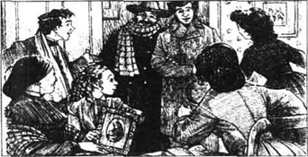
罗瑞很快意识到，琼有秘密在瞒着他，她拒绝向他透露，可他猜想那秘密是关于麦格和布鲁克先生的。他也因老师什么都不说而感到有些生气。他开始制定他自己的计划。
与此同时，麦格忙着为父亲的归来做准备，可是她似乎突然有了某种变化。有一两天，一有人跟她说话她就跳起来，脸上带着焦虑的神色。
然后有封给她的信，几分钟以后马奇太太和琼看见麦格眼盯着那封信，面露惧色。
“我的孩子，怎么了？”马奇太太问。
“是个误会——他没发那封信。琼，你怎么能那样做？”麦格用手捂住脸哭了。
“我？我什么也没做呀，”琼说，“她在说什么？”
麦格从她口袋里抽出另一封信扔给琼。“是你写的，那个坏男孩帮了你。你们怎么能这么无情，对我们俩这么坏？”
琼和母亲读了那封装在麦格口袋里的信。
我最亲爱的麦格，我再也不能隐瞒对你的爱，在我回来之前我一定要得到你的答复。我还不能告诉你的父母，可我想如果他们知道我们相爱的话他们是会同意的。劳伦斯先生会帮我找一份好工作，然后，我心爱的姑娘，你会让我幸福的。先不要对你父母讲，但通过罗瑞给我一句希望的话吧。爱你的约翰。
“那个可恶的男孩！”琼说，“我会让他后悔的。”
可她母亲说：“等等，琼。你肯定这事与你无关吗？”
“我以前从来也没见过这封信！”琼说，“可布鲁克先生不会说像这样的蠢话。”
“这像他的笔迹，”麦格看着她手上的第二封信。”
“噢，麦格，你没回这封信吧？”马奇太太问。
“不，我回了！”麦格哭着说，又把头埋进双手里。
“让我抓住那个坏男孩！”琼大喊。
马奇太太坐在麦格耳边：“把一切都告诉我。”
“罗瑞带来了第一封信，”麦格说，“他看上去什么都不知道。我本来想告诉你，可我记得你是那么喜欢布鲁克先生，就想，让我自己把这个小秘密保守一段时间也没关系。现在我再也不能面对他了。”
“你给他写了什么？”马奇太太问。
“我说我太年轻了，什么都不能做。我说我不希望对你们保守秘密，所以他必须要对爸爸讲。我感谢他的好意，说我会成为他的朋友，但在很长时期内不会有更进一步的关系。”
马奇太太笑了，看上去很高兴。
琼笑了。“他怎么答复的？”
“他在这儿写道，他从没发过什么情书，说他因为我妹妹琼对我们俩做游戏感到很遗憾，”麦格说，“这是一封好心的信，可想想看我感觉有多糟糕。”
“我不相信布鲁克先生看见过这两封信的任何一封，”琼说，“两封都是罗瑞写的，他把你的信留下了，因为我不告诉他我的秘密。”
“去把罗瑞找来，琼，”马奇太太说，“我要这一切立刻停下来。”
琼跑了，马奇太太轻柔地给麦格讲了布鲁克先生的真实感觉。“现在，亲爱的，你爱他足以到愿意等他给你建个家吗？”
“我又害怕又担心，”麦格答道，“我在很长时间内也不想让任何事与爱有关——也许永远不想。如果约翰不知道这些，就别告诉他，请让琼和罗瑞也别说出去。”
马奇太太尽力安慰女儿，可当麦格一听到罗瑞正和琼回来，她就跑出了房间，马奇太太单独见了那男孩。罗瑞一看到马奇太太愤怒的面容，他就猜到了原因。琼在房间外面等着，只听里面的声音高一声低一声地持续了半个小时。可女孩们并不知道都说了些什么。
当她们被叫进去以后，罗瑞向麦格道了歉，告诉她布鲁克先生根本不知道那两封信的事。“请饶恕我，麦格。”他说。
“我会试试，”麦格说，“可我没想到你会那么不友好。”
罗瑞看上去非常后悔，琼很想直接就饶恕他，可她什么话也没说，甚至拒绝看他。当他离开时，他看上去受到了伤害，并且非常不开心，琼希望自己更仁慈一些。她从来不会生很长时间的气，于是过了会儿她就借口借过劳伦斯先生一本书，急匆匆赶到那座大房子里去。
“劳伦斯先生在吗？”琼问一个仆人道。
“是的，小姐，可你不能见他。”仆人说。
“为什么？他病了吗？”琼说。
“不是，小姐，可他刚跟罗瑞生过气。”
“罗瑞在哪儿？”琼问。
“他关在自己房间里不出来。”
“我要去看看是怎么回事，”琼说，“他们俩我谁也不怕。”
他走上楼敲了敲罗瑞的门。
“别敲了！”罗瑞喊道。
琼马上又敲，门一下子开了。没等罗瑞制止她，她就迈进了房间。“我来向你说我原谅你了，”她说，“我不生你的气了。”
“噢，”罗瑞说，“谢谢你。”
“怎么了？”她问。她发觉了他不高兴的神色。
“我不告诉祖父你母亲为什么叫我去，因为我答应她不告诉任何人，”他说，“可是祖父摇晃我，非要知道真相不可，我就跑上来把自己关起来了。”
“我想他后悔那么干了，”琼说，“下楼去说你很抱歉。我会帮你的。”
“不，我不！”罗瑞生气地说，“我的确对麦格很抱歉，我请她饶恕我，可如果不是我做错了事，我就不会再道歉。当我告诉他我不能说出一些事时他应该相信我。我不喜欢被那样摇晃，如果他不道歉我就不下楼。”
“听着，如果我让你祖父为摇晃了你而道歉，你会下楼吗？”琼问道。
“是的，可你做不到。”罗瑞答道。
“如果我能制服小的，我就能制服老的。”下楼的时候琼自言自语。
“进来！”当她敲门时，劳伦斯先生说。
“是我，先生，”琼说，“我来还一本书。”
“你还要吗？”老先生说，他看上去有些生气，但尽力不显露出来。
“是的。”琼说。当劳伦斯先生生气地盯着她时她假装在找另一本书。
“那孩子干了什么？”他突然问，“他不告诉我。”
“他确实做了件错事，我们原谅了他，”琼说，“可我们都发誓不把这件事对任何人讲。”
“他不能因为答应了你们这些心软的女孩子而隐瞒真相，”老先生说，“告诉我，琼。”
“我不能，先生，因为妈妈命令我不准说，”琼说，“如果我告诉了你，就会给别的人带来麻烦，而不是罗瑞。”
这话看起来让老人放心了。“那我就原谅他，”他过了片刻说道，“他是个很难缠的孩子，很难驾驭，你知道的。”
“我也是，”琼说，“可一句好话总是会有帮助的。”
“你认为我对他不好吗？”他尖刻地说。
“常常是太好了，”琼说，她有点害怕，“可有时太容易跟他生气。”
老先生看上去有点羞愧。“你是对的。我是那样。虽然我爱那孩子，可有时我发现很难对他有耐心。把他带下来，告诉他没事了，我很抱歉摇晃了他。”
“为什么不给他写个条子道歉呢，先生？”琼说，“他说只有收到了道歉信他才会下来。”
劳伦斯先生又尖刻地看了她一眼，可然后就笑了，戴上了他的眼镜。“来，给我张纸。”他说。
纸条写好了，琼吻了老人的脸颊，然后她跑上楼把信放到罗瑞的门下。可他还没等她走开就出来了。
“干得好，琼，”他说，“他对你叫嚷了吗？”
“不，他很平静，”琼说，“现在去吃饭吧。然后你们俩都会感觉好些。”
每个人都认为这件事情已经结束了，可虽然其他人都忘了，麦格还记得。她从不谈起罗瑞的老师，可她常想起他，做她自己的梦。有一次，琼到她姐姐桌子里找东西，她发现一小张纸上一遍一遍地写着“约翰·布鲁克太太”。
“噢，天哪！”琼说。
14．Happier days
14
Happier days
Christmas Day was very different that year. Beth felt much better and was carried to the window to see the snowman which Jo and Laurie had made. It had a basket of fruit and flowers in one hand and a new piece of music in the other. Laurie ran up and down, bringing in the presents, and Jo sang a funny song.
'I'm so happy!' laughed Beth, as Jo carried her back to the other room to rest after the fun. 'Oh, I do wish that Father was here too!'
Half an hour later, Laurie came to the house and opened the door quietly. 'Here's another Christmas present for the March family!' he called out.
He moved away, and in his place appeared a tall man holding the arm of another tall man, who tried to say something but couldn't.
'Father!' cried Meg and Jo together—and Mr March disappeared under lots of loving arms and kisses. Mr Brooke kissed Meg—by mistake, as he tried to explain.
Suddenly, the door to the other room opened, and there was Beth, running straight into her father's arms. There were tears of happiness on many faces before all the excitement died down. Then Mrs March thanked Mr Brooke for taking care of her husband, and he and Laurie left the family to themselves.
Mr March and Beth sat in one big armchair, and the others sat around them. 'I wanted to surprise you all, and the doctor let Mr Brooke bring me home,' said Mr March. 'John has been so good to me. He is an excellent young man.' Mr March looked at Meg, who was staring at the fire, then he smiled at his wife. She smiled back. Jo understood exactly what the smiles were saying, and went out to the kitchen complaining to herself about 'excellent young men with brown eyes!'
There never was a Christmas dinner like the one they had that day. Mr Laurence and his grandson ate with them, and so did Mr Brooke. Jo gave the tutor many black looks and would not speak to him, which amused Laurie.
The guests left early and the happy family sat together around the fire.
'A year ago we were complaining about the awful Christmas we expected to have, do you remember?' said Jo.
'It's been quite a good year,' said Meg, thinking about Mr Brooke.
'I think it's been a hard one,' said Amy.
'I'm glad it's over, because we've got Father back,' whispered Beth, who was sitting on his knee.
'I've discovered several things about you young ladies today,' said Mr March.
'Oh, tell us what they are!' cried Meg.
'Here's one,' he said, taking her hand. It had a small burn on the back and two or three little hard places on the front.
'I remember when this hand was white and smooth. It was pretty then, but to me it's much prettier now. I'm proud of this hard-working hand, Meg.'
'What about Jo?' whispered Beth. 'She's tried so hard, and has been very, very good to me.'
He smiled and looked at Jo sitting opposite. 'Her hair may be short, but I see a young lady now. Her face is thin and white from worrying, but it has grown gentler. Perhaps I'll miss my wild girl, but I'm sure I'll love the warm-hearted woman who has taken her place.'
Jo's face was red in the firelight as she listened.
'Now Beth,' said Amy.
'She's not as shy as she used to be,' said her father lovingly, and he held Beth close when he remembered how near they had come to losing her. Then he looked down at Amy by his feet. 'I've noticed today that Amy has helped everyone patiently and with a smile. She's learned to think more about other people, and less about herself.'
Beth moved out of her father's arms and went to the piano. She touched the keys softly and began to sing. Soon, the others joined her in a happy Christmas song.
The next afternoon, Jo and Meg were sitting at the window when Laurie went by. When he saw Meg, he fell on one knee in the snow, beat his chest, and put out his arms towards her. When Meg told him to go away, he pretended to cry before walking away looking miserable.
Meg laughed. 'What was he doing?' she said.
'He was showing you how your John will act,' answered Jo, crossly.
'Don't say my John, it isn't right.' But Meg said the words again silently inside her head.
'If he asks you to marry him, you'll cry or look stupid, instead of saying a loud No,' said Jo.
'No, I won't,' said Meg. 'I'll say, "Thank you, Mr Brooke, you are very kind, but I am too young to marry you. Please let us be friends, as we were."'
'I don't believe it,' said Jo.
'It's true. Then I'll walk out of the room with my head high.' Meg got up and pretended to do it—but ran back to her seat when she heard someone knock on the door.
Jo opened it with an angry look.
'Good afternoon,' said Mr Brooke. 'I came to get my umbrella, which I left behind yesterday.'
'I'll get it,' said Jo, pushing past him. 'Now Meg can tell him,' she thought.
But Meg was moving to the door. 'I expect Mother will want to see you,' she said. 'I'll call her.'
'Don't go,' he said. 'Are you afraid of me, Meg?'
'How can I be afraid when you've been so kind to Father,' said Meg. 'I wish I could thank you for it.'
'You can,' he said. And he took Meg's small hand in his and looked at her lovingly.
'Oh, please don't,' she said, looking frightened.
'I only want to know if you love me a little, Meg,' he said gently. 'I love you so much.'
This was the moment to repeat the words she had told Jo, but Meg forgot them all. 'I don't know,' she said, so softly that John had to move closer to hear her reply.
He smiled gratefully. 'Will you try to find out?'
'I'm too young,' she said, hesitating but feeling her heart beating rather fast.
'I'll wait while you learn to like me,' he said. 'Will it be very difficult?'
'Not if I choose to learn,' she said.
'Please choose, Meg. I love to teach, and this is easier than German,' said John, taking her other hand.
She looked at him and saw that he was smiling. He seemed so sure of success that Meg became a little annoyed. She felt excited and strange, and taking her hands away from his, she said, 'I don't choose. Please go away!'
Poor Mr Brooke looked shocked. 'Do you mean that?'
'Yes,' she said, rather enjoying the game she was playing. 'I don't want to think about these things. It's too soon.'
'I'll wait until you've had more time,' he said, and looked so unhappy that Meg began to feel sorry for him.
It was at this moment that Aunt March came in. She had come to see Mr March and was hoping to surprise the family. She did surprise two of them. Meg, with her face bright red, just stared at her aunt, while Mr Brooke hurried into another room.
'Goodness me, what's all this?' cried Aunt March.
'It's Father's friend,' said Meg hurriedly. 'I'm so surprised to see you, Aunt March.'
'I can see that,' said Aunt March, sitting down. 'What has he said to make your face turn pink?'
'Mr Brooke and I were just... talking,' said Meg.
'Brooke? The boy's tutor? I understand now. I know all about it because I made Jo tell me. You haven't promised to marry him, have you, Meg? If you have, you won't get one bit of my money, do you hear?'
It was exactly the wrong thing to say. When Meg was ordered not to marry John Brooke, she immediately decided that she would. 'I'll marry whoever I want to, Aunt March, and you can give your money to anyone you like!' she said.
'You'll be sorry!' said Aunt March. 'Why don't you marry a rich man to help your family?'
'Father and Mother like John, although he's poor,' said Meg.
'Be sensible, Meg,' said her aunt. 'He knows I have money, and that's why he likes you, I suspect.'
'Don't say that!' said Meg. 'My John wouldn't marry for money any more than I would! We'll work and wait, and I'll be happy with him because he loves me, and—'
Meg stopped as she remembered that she had told 'her John' to go away.
Aunt March was very angry. 'Just don't expect anything from me when you are married!' she said. And she went out of the room, banging the door behind her.
Meg didn't know whether to laugh or cry. Before she could decide, Mr Brooke came back in from the next room and put his arms around her. 'Oh Meg, I could hear your voices,' he said. 'Thank you for proving that you do love me a little.'
'I didn't know how much until she said those things about you,' said Meg.
'So I can stay, and be happy?' he said.
'Yes, John,' she whispered, and hid her face on John's chest.
Jo returned and found them like that. Meg jumped and turned round, but John Brooke laughed and kissed the shocked Jo, saying, 'Sister Jo. Wish us luck!'
Jo ran upstairs to find her parents. 'Go down quickly!' she said. 'John Brooke is behaving terribly and Meg likes it!'
Mr and Mrs March left the room in a hurry, while Jo threw herself on the bed and told the awful news to Beth and Amy. But the little girls thought it was all most interesting and delightful.
Nobody knew what was said that afternoon, but a lot of talking was done. The quiet Mr Brooke managed to persuade his friends that his plans were good and sensible, then he proudly took Meg in to supper. Everyone looked so happy that Jo tried to look pleased too.
After supper, Laurie arrived with some flowers for 'Mrs John Brooke', then he followed Jo into the corner of the room while the others went to welcome old Mr Laurence.
'What's the matter, Jo?' said Laurie. 'You don't look very happy.'
'Nothing will ever be the same again,' said Jo sadly. 'I've lost my dearest friend.'
'You've got me,' said Laurie. 'I'm not good for much, but I promise I'll always be your friend, Jo.'
'I know you will,' answered Jo, gratefully.
'Then don't be sad,' he said. 'I'll be back from college in three years' time, and then we'll go abroad, or on a nice trip somewhere. Wouldn't that cheer you up?'
'Anything can happen in three years,' said Jo.
'That' s true,' said Laurie. 'Don't you wish you knew what was going to happen?'
'I don't think so,' said Jo. 'It may be something sad, and everyone looks so happy now.' As she spoke, she looked round the room, and her face brightened at the sight.
Father and Mother sat happily together. Amy was drawing a picture of Meg and John, who were looking lovingly at each other. Beth lay on the floor, talking to her old friend, Mr Laurence. Jo sat in her favourite chair with a serious, quiet look on her face. Laurie smiled at her in the long mirror that was opposite them both. And Jo smiled back.
carry v. 搬运。
snowman n. figure of a man made of snow. 雪人。
basket n. 篮子。
armchair n. chair with supports for the arms. 有扶手的椅子。
exactly adv. correctly. 正确地。
remember v. have or keep in the memory. 记得。
miss v. feel regret at the absence of. 怀念。
firelight n. 火光。
shy adj. 怕羞的。
chest n. 胸部。
act v. do something. 行动。
silently adv. saying little or nothing. 沉默地。
umbrella n. 伞。
instead adv. as an alternative or substitute. 代替。
hesitate v. show signs of uncertainty. 犹豫。
beat v. hit repeatedly. 击；打。
choose v. pick out from a greater number. 选择。
moment n. point of time. 瞬间。
goodness n. used instead of God! 啊呀！天啊！
marry v. take as a husband or wife. 结婚。
order v. give an order to someone. 命令。
whoever pron. any person who. 任何人。
bang v. hit violently. 砰然关上。
voice n. sounds made when speaking or singing. 嗓音。
stay v. remain. 停留；逗留。
supper n. last meal of the day. 晚餐。
follow v. go after. 跟随。
welcome v. 欢迎。
favourite adj. best liked. 最受喜爱的。
快乐的日子
14 快乐的日子
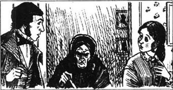
那年的圣诞节非同寻常。白丝感觉好多了，她被抬到窗前看琼和罗瑞堆起的雪人。它一只手拿着一篮水果和鲜花，另一只手拿着一张新歌谱。罗瑞跑上跑下地送来礼物，琼唱着一首有意思的歌。
“我真高兴！”玩乐过后、琼把白丝抱到另一个房间休息时白丝笑着说，“噢，我真希望爸爸也在这儿！”
半个小时以后，罗瑞来到屋里，静悄悄地打开门。“这儿有给马奇一家的另一份圣诞礼物！”他喊道。
他挪开了，在他的位子上出现了一个高大的男人，他扶着另一个高大的男人，这个人试图说些什么，但没有说出来。
“爸爸！”麦格和琼同声喊道——然后马奇先生就沉浸在许多爱的拥抱和亲吻中了。布鲁克先生吻了麦格——是个误会，他试图这样解释。
突然，另一个房间的门打开了，是白丝，她径直奔向了父亲的怀抱。兴奋消散之前，许多人脸上都淌下了欢乐的眼泪。马奇太太感谢布鲁克先生照顾了她丈夫，然后布鲁克先生和罗瑞就离开了，剩下了一家人在一起。
马奇先生和白丝坐在一张大椅子上，其他人围坐在他们身边。“我想让你们所有人都吃一惊，医生让布鲁克先生带我回家了，”马奇先生说，“约翰一直对我很好。他是个很出色的年轻人。”马奇先生看了看麦格，她正盯着炉火，于是他对妻子笑了笑。她也笑了。琼十分明白这微笑的含义，她走出来往厨房去，一边对自己抱怨着那“有着棕色眼睛的出色的年轻人”。
往年的圣诞节晚餐从来都没有像他们那天吃过的那样。劳伦斯先生和他的孙子同他们一起吃的饭，布鲁克先生也去了。琼给了这位家庭教师许多的白眼，不肯跟他讲话，这让罗瑞觉得很有意思。
客人们很早就离开了，快乐的一家围坐在炉火边。
“一年以前我们曾抱怨我们将要度过的那个糟糕的圣诞节，你们还记得吗？”琼说。
“这一年真好。”麦格说道，心里想着布鲁克先生。
“我觉得这一年过得很艰辛。”艾米说。
“我很高兴它终于结束了，因为父亲回来了。”白丝轻声说，她坐在他的膝头。
“今天我发现了你们这些年轻姑娘的一些事。”马奇先生说。
“噢，告诉我们是什么？”麦格喊道。
“这儿有一个。”他说，说着拿起她的手。那手背上有一小块烫痕，手心上有两三块硬块。
“我记得这手曾经又白又嫩。它那时很美，可对我来说它现在更美，我为这双劳动的手而感到骄傲，麦格。”
“琼怎么样？”白丝轻声问道，“她那么努力，还对我非常非常好。”
他笑了笑，看着坐在对面的琼。“她的头发可能是短了些，可我现在看到了一位年轻的淑女。她的脸削瘦，因为焦虑而苍白，可它变得更温柔了。也许我会想念我那个爱疯跑的女孩子，可我肯定会爱这个取而代之的热心的妇人。”
琼听着，脸色在火光中变红了。
“该说白丝了。”艾米说。
“她不像从前那么害羞了，”她的父亲充满爱意地说，当他想起他们差点失去她时，他把白丝搂得很紧。然后他看了看坐在他脚边的艾米。“我今天注意到艾米耐心地、面带微笑地帮助每个人。她已经学会了多为别人着想，少想些自己。”
白丝从父亲怀里下来，来到钢琴旁边。她轻轻地触动了琴键，开始唱歌。不久，其他人就跟她一起唱起了一支圣诞歌。
第二天下午，琼和麦格正坐在窗边时，罗瑞正好路过。当他看见麦格的时候，他单膝跪倒在雪地里，捶打自己的胸口，并向她伸出双臂。当麦格告诉他走开时，他假装哭泣，然后面带痛苦地走了。
麦格笑了。“他在干什么？”她问。
“他在向你演示你的约翰会对你怎么样。”琼面带怒气地说。
“别说‘我的约翰’，这不对。”可麦格在脑海里默默地又重复了那句话。
“如果他让你嫁给他，你会哭，或者看上去很蠢，而不会大声说‘不’。”琼说。
“不，我不会的，”麦格说，“我会说，‘谢谢你，布鲁克先生，你很好，可我太年轻了，不能嫁给你。让我们做朋友吧，就像从前那样。’”
“我不相信。”琼说。
“是真的。我会高高地抬起头走出房间。”麦格站起来假装那样做——可当她听到有人敲门时她就跑回了座位。
琼带着怒容打开了门。
“下午好，”布鲁克先生说，“我来取我的伞，我昨天落在这儿了。”
“我去拿来，”琼说，推开他。“现在麦格可以跟他讲了。”她想。
可麦格正朝门走过来。“我想妈妈一定想见你，”她说，“我去叫她。”
“别走，”他说，“你是不是怕我，麦格？”
“你对父亲这么好，我怎么会怕你呢，”麦格说，“我想我要为此感谢你。”
“你可以。”他说。他把麦格的小手放在他的手里，充满爱意地看着她。
“噢，请别这样，”她说，面带惧色。
“我想知道你是不是爱我一点点，麦格，”他温柔地说，“我太爱你了。”
此时正是她重复她刚才跟琼讲的话之时，可麦格把它们都忘了。“我不知道。”她说，她的声音太轻，以至于约翰得凑得更近一些，才能听见她的回答。
他感激地笑了。“你会试着弄明白吗？”
“我太年轻了。”她犹豫不决地说，可她感到自己的心跳得非常快。
“我会等着你学会喜欢我，”他说。“那会很困难吗？”
“如果我选择学就不难。”她说。
“那你就选择学吧，麦格，我喜欢教你，教这个比教德语容易。”约翰说着把她的另一只手也拿起来。
她看看他，见到他在微笑。他看上去必胜的样子使麦格感到有些生气。她感到激动和陌生，把她的手从他的手里抽回，她说：“我不选择。请走吧！”
可怜的布鲁克先生看上去很震惊。“你是当真？”
“是的，”她说，对她玩的游戏感觉很有意思。“我不想想这些事。这来得太快了。”
“我会等到你有更多的时间。”他说。他看上去那么不开心，麦格开始为他感到难过。
正在这时，马奇姑妈走了进来。她来看马奇先生，希望使这家人大吃一惊。她确实使这其中的两人吃了一惊。麦格脸涨得通红，只是瞪着她的姑妈，而布鲁克先生则赶紧走进了另一个房间。
“天哪，这都是怎么回事？”马奇姑妈喊道。
“是爸爸的朋友，”麦格很快地说，“看见您真让我吃惊，马奇姑妈。”
“我看得出来，”马奇姑妈说，边说边坐下来。“他说了些什么，让你的脸变红了？”
“布鲁克先生和我只是在……谈话。”麦格说。
“布鲁克？那男孩的家庭教师？我现在明白了。我知道所有的一切，因为我让琼告诉我了。你没答应嫁给他，是吧，麦格？如果你答应了，你就不会从我这儿得到一点钱了，听到了吗？”
那话恰恰说得不对。当麦格被命令不许嫁给约翰·布鲁克时，她立即决定她要嫁给他。“我想嫁给谁就嫁给谁，马奇姑妈，你可以把你的钱给任何你喜欢的人！”她说。
“你会后悔的！”马奇姑妈说，“你为什么不嫁给一个富人，帮帮你的家人？”
“爸爸和妈妈喜欢约翰，虽然他穷。”麦格说。
“理智点，麦格，”她的姑妈说，“他知道我有钱，我怀疑他正是为此而喜欢你。”
“不许那么说，”麦格说，“我的约翰不会为钱而结婚，我也不会！我们会工作，会等待，我和他在一起会感觉很幸福，因为他爱我，还有——”
麦格停了下来，因为她想起她已经告诉“她的约翰”走开了。
马奇姑妈非常生气。“等你结婚时别想从我这儿得到任何东西！”她说，然后摔门而去。
麦格不知道该笑还是该哭。在她做出决定之前，布鲁克先生从隔壁房间走回来，用双臂搂住她。“噢，麦格，我能听到你的声音，”他说，“谢谢你证明了你确实有一点爱我。”
“在她说那些关于你的话之前我不知道有多少。”麦格说。
“那么我能留下来高兴高兴了？”他说。
“是的，约翰。”她轻声说，将她的脸埋在约翰胸前。
琼回来了，发现他们在那样。麦格跳起来转过身，可约翰·布鲁克笑了，他吻了吻受了惊吓的琼，说：“琼妹妹，祝我们好运吧！”
琼跑上楼找到她的父母。“快下楼去！”她说，“约翰·布鲁克表现很不好，麦格却很喜欢！”
马奇先生和马奇太太赶紧离开了房间，琼扑倒在床上，又把这糟糕的消息告诉了白丝和艾米。可小女孩们觉得这很是有趣和令人高兴。
没人知道那天下午都有些什么谈话，可大家谈了许多。文静的布鲁克先生成功地说服了他的朋友，他的计划是很好的，有理智的，然后他骄傲地把麦格带进来吃晚饭。每个人看上去都很高兴，琼也尽力看上去很高兴。
晚饭后，罗瑞带着给“约翰·布鲁克太太”的鲜花来了。当其他人去迎接老劳伦斯先生的时候，他跟着琼来到屋子的一个角落。
“出什么事了，琼？”罗瑞说，“你看上去不太高兴。”
“一切都跟从前不再相同了，”琼悲伤地说，“我失去了最好的朋友。”
“你有我呢，”罗瑞说，“我不一定很好，可我发誓我会永远是你的朋友，琼。”
“我知道你会的。”琼感激地说。
“那别伤心了，”他说，“我三年之后就会大学毕业，然后我们就出国，或者去什么地方好好旅行一番。那会让你高兴一点吗？”
“三年里什么都会发生。”琼说。
“是的，”罗瑞说，“你希望知道将会发生什么吗？”
“我不希望，”琼说，“可能会是伤心的事，现在每个人看上去都很高兴。”当她说这话时，她环顾屋内，她看到的景象使她高兴起来。
爸爸和妈妈快乐地坐在一起。艾米在为麦格和约翰画画，那两个人相互爱恋地对望着。白丝躺在地板上和她的老朋友劳伦斯先生聊天。琼在她最喜欢的椅子上坐下，面带严肃安静的表情。罗瑞从他们对面的长镜中对她微笑，琼也朝他微笑。
Exercises
Exercises
A Checking your understanding
Chapters 1–3 Write answers to these questions.
1 Why wasn't the girls' father at home that Christmas?
2 Why did Mrs Hummel almost cry with happiness?
3 What happened to Meg's hair before the New Year's Eve party?
4 How did Meg get home with her bad ankle?
Chapters 4–6 Are these sentences true (T) or false (F)?
1 Aunt March was a nice old lady who never complained.
2 Jo went to visit Laurie to cheer him up.
3 Beth forgot her shyness when old Mr Laurence gave her a piano.
4 Amy hid Jo's story notebook to make her sorry.
Chapters 7–9 Who in these chapters...
1 ... did not like Meg when she was dressed up in fine clothes?
2 ... put salt on the strawberries instead of sugar?
3 ... was going to become a soldier next year?
4 ... knew a secret about Meg's lost glove?
Chapters 10–12 Who said these words, and when?
1 'I shall go at once, but it may be too late.'
2 'I'd do it again, if I could.'
3 'Oh, Jo! Mrs Hummel's baby is dead.'
4 'People wouldn't feel half so bad about me if I was sick.'
5 'I don't know anything about love!'
Chapters 13–14 Find answers to these questions.
1 Why did Jo get so angry with Laurie?
2 Why wouldn't Laurie tell his grandfather what he had done?
3 What was the surprise at Christmas for the March family?
4 Why didn't Jo want Meg to marry John Brooke?
B Working with language
1 Put these into the right order and join them together to make four sentences. Check your order in Chapter 10.
1 She was gone a long time,
2 and Jo went out to fetch some things from the shops.
3 When the telegram brought the news about Mr March's illness,
4 because she wanted to do something to help her father.
5 she had twenty-five dollars to give her mother.
6 She had cut off and sold her lovely long hair
7 Everybody hurried to help her get ready
8 but when she came back,
9 Mrs March said she would leave for Washington at once.
2 Choose the best word to join the sentences together.
1 We invited the Laurence boy to our party and/but he didn't come.
2 Beth was very shy although/so she didn't go to school.
3 Jo was very angry indeed while/when Amy burned her notebook.
4 They enjoyed being lazy although/and the days seemed very long.
5 We would all be very sorry unless/if anything happened to you.
C Activities
1 When Mr March comes home, he thinks that his daughters have changed. In what ways do you think they are different? Write a few sentences about each of the four, describing the changes.
2 Imagine you are Aunt March. When you get home, you feel sorry that you were angry with Meg about John Brooke. Write her a letter, trying to be friendly, but also warning her that money is very important.
3 Jo and Laurie will meet again in three years, after Laurie has been to college. Write about 150 words, saying what you think will happen to them.
封底
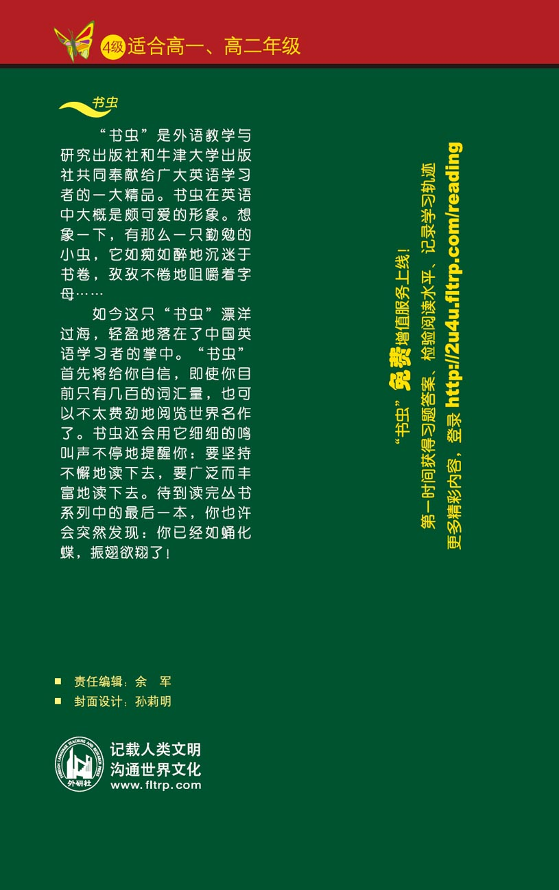